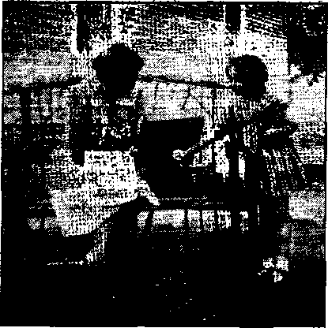
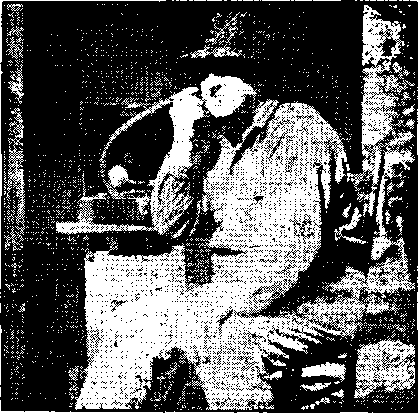

Another grand ride to prosperity

Advertising the Religious Business
Jonadabs Rejoicing in Blessings
Counsel by J. F. Rutherford
“Fascism in the English Church”
British Comment
Published other Wednesday by WATCHTOWER BIBLE AND TRACT SOCIETY, INC.
117 Adams St., Brooklyn, N. Y., U. S. A.
Editor Clayton J. Woodworth
Business Manager Nathan H* Knorr
Five Cents a Copy
11 a year In the United States
11.25 to Canada and all other countries
NOTICE TO SUBSCRIBERS
Remittances: For your own safety, remit by postal or express money order. When coin or currency is lost in the ordinary mails, there is no redress. Remittances from countries other than those named below may be made to the Brooklyn office, but only by international postal money order.
Receipt of a hew or renewal subscription will be acknowledged only when requested. Notice of Expiration sent With the journal one month before subscription expires. Please renew promptly to avoid loss of copies. Send grange of address direct to us rather than to the post office. Your request should reach us at least two weeks before the date of issue with, which it is to take effect. Send your old as well as the new address. Copies will not be forwarded by the post office to your new address unless extra postage is provided by you Published also In Afrikaans, Bphemlan, Danish, Dutch, Finnish, French, German, Greek, Hungarian, Japanese, Norwegian, Polish, Portuguese, Spanish, Swedish, Ukrainian; also special Australian edition in English,
OFFICES FOR OTHER COUNTRIES
England 34 Craven Terrace, London, W. 2
Canada 40 Irwin Avenue, Toronto 5, Ontario
Australia 7 Beresford Road, Strathfleld; N’S-W. South Africa 623 Boston House, Cape Town
Entered as second-class matter at Brooklyn, N. Y,, s under the Act of March 3, 1879.
. A Redskinned Magliabtcchi
The story is told of a Kentucky colonel who had an argument with Satan. The latter claimed that no one had a perfect memory, but the colonel maintained that there was an Indian oft his plantation who never forgot anything) The colonel agreed to forfeit his soul to Satan if the Indian ever forgot anything.
Satan went up to the Indian and said, “Do you like eggs?”
The Indian replied, “Yes.” And Satan went away.
Twenty years later the colonel died. Satan thought, “Aha, here’s my chance.” So he went back to the Indian and, raising his hand, gave the tribal salutation, “How?”
Quick as a wink the Indian replied, “Fried.”
—Kelly’s Graphic,
Easily Obtained
“That’s a nice umbrella you’ve got there,” said Robinson.
“Yes, it is,” replied Smith. “And it was funny how I got it, too.
“I was going home one night without a coat, and it started to rain cats and dogs, so I dodged into a doorway for shelter. Then I saw a young chap coming along with an umbrella, and I thought I’d ask him to let me share it with him.
“So I stepped up to him and said: ‘Where are’you going with that umbrella?’ and, without saying a word, he flung it down and ran off as fast as his legs could carry him.”—Labor.
Up t& Date •
Native: Well, what do you think of our little city ?
Visitor: It’s the first cemetery I ever saw with traffic lights!—Tellow Crab.
Questionable Returns
Doctor: Congratulations, Governor—-you’re the father of/triplets.
Politician (automatically): I demand a recount!—Bored Walk.
Harrison at the ’Phone
“Yes, this is Mr. ’Arrison. What! you can’t ’ear? This is Mr.’Arrison — haitch, hay, two. hars, a hi, a hess, a ho, and a hen—’Arrison.”
CONSOLATION
CONSOLATION
“And in His name shall the nations hope.”—Matthew 12:21, A.R.V.
Volume XXI Brooklyn, N. Y., Wednesday, February 7, 1940 Number 932
Big Business Bemoans the War
V | W BIG BUSINESS, and particularly V big business in America, will profit tjfl'.W ^rom ^e war, intends to profit from the war now raging in Europe; but Mtlto do so discreetly. Hence, first of all, the positive and unequivocal statement by Big Business that it does not want war, does not like war, and will not under any circumstances seek to profit from war. Of course not! .
Say the McGraw-Hill industrial and business publications, reaching over a million readers: “To say that Industry and Business want war or will encourage, directly or indirectly, our participation in the present war, is a vicious and deliberate lie.” All right, then, here it is: Industry and Business want war and will encourage, directly and indirectly, America’s participation in war just as soon as it thinks it can profit by that course of action!
Next comes the “Neutrality” legislation, which must make it possible for business to profit from the war to the fullest extent, but at the least possible risk. Hence America will sell all the arms possible to the belligerents. When the bill was passed wdiieh made this possible there was tremendous trading on the stock market and stocks rose remarkably. This was an indication of the sorrow of Big Busi- , ness over the situation. ’
Eugene G. Grace, munitions maker No. 1 of the United States, and head of the Bethlehem Steel Corporation, says he is against war from every aspect.
One industry which stands to profit materially from war is the chemical industry. Charles Belknap, executive vice president of the Monsanto Chemical Co. of St. Louis, said, “We don’t want a war—we^can’t afford one.”
But, then, there are a lot of other things “we” can’t afford. For instance, it is rather expensive to keep on feeding millions of mouths at public expense, and making parks and public improvements right and left out of an empty treasury. It may be possible to figure out a way to balance the public ledger.
Past experience suggests that wars have served the purposes of Big Business rather than the interests of the people, and even where such public interests seem to have been in a measure safeguarded by recourse to arms Big Business has generally managed to insert its right front foot at the propitious moment and come away with a not inconsiderable profit. Can you blame the people for being a little suspicious and uneasy?
Newspaper correspondents, at any rate, do not altogether rule out the probability of America’s doing something, in case ... In weighing the possibilities of failure or success, defeat or victory, in the present European war, Eugene Staley, in the Neiv York Times, says:
An element which throws all calculations into doubt, however, is the policy of the Soviet Union. [Clarified by his a la Mein Kampf invasion of Finland, and shameless lying incident thereto.—-Ed.] Stalin would seem to be in a position where, by withholding supplies, he could insure Hitler’s ultimate defeat, or, by giving or lending to Hitler, or perhaps even by trading vigorously, he could threaten to prolong the war intolerably for the Allies. All this, of course, omits many imponderables : uprisings, strokes of military genius, or what Americans might decide to do as events shaped themselves. -
So, however much Big Business does not want to have war, it may change its attitude very quickly. Just now it seems not willing to admit that it can see that anything could be gained by resorting to war—and that, of course, is the main consideration: gain.
Taking Sorrow by the Forelock
Said H. Gordon Selfridge, of London, “The opportunity to achieve and to show results has been eliminated all over the world. The world in the future will perhaps be better for the underdog, but for the man who takes risks and engages in enterprise there will be little incentive.” Too bad 1
Alfred P. Sloan, Jr., chairman of General Motors Corp., said that in case of war, “irrespective of all the facts and circumstances, all ultimately lose.”
The automobile industry, as represented by the Automobile Manufacturers Association, has not done so badly during the past fiscal year. The wholesale value of cars and trucks produced (United States and Canada) was $2,224,475,000; and that of tires, parts and accessories for replacement and service, $1,243,236,000; a tidy total, of $3,467,711,000. It would seem, then, that Big Business in this field would not be particularly interested in war, unless, of course, it should help to solve problems of strikes, lockouts and unemployment.
The General Electric Company showed a net profit of $25,022,631 for the first nine months of the year 1939, an increase of 43 percent over the same period of the preceding year. The figures suggest a neat profit, although they do not, to the public, disclose the percentage of gain on the capital stock. Comparison of export trade figures with the World War nations for the two and a half years before and after the war started is significant. The total for that period before the war was $4,094,728,000. The first' two and a half years of war saw the total rise to $7,662,573,000, an increase which made it possible for American workers to wear silk shirts and otherwise 'put on the dog’. Of course, that couldn’t last, and didn’t. It is merely mentioned in passing.
Wars must be paid for, and England’s income tax rate has accordingly been drastically increased. Note the comparison between the United States and England:
|
Annual income of $2,000 United States England | ||
|
Family with two children Married couple, no children Bachelor |
None None ’ $40 |
$70.08 246.26 350.40 |
|
Annual income of $4,000 Family with two children |
28 |
721.26 |
|
Married couple, no children |
60 |
871.26 |
|
Bachelor |
120 |
976.26 |
|
Annual income of $20,000 Family with two children |
1,164 |
8,047,26 |
|
Married couple, no children |
1,260 |
8,202,06 |
|
Bachelor |
1,450 |
8,326.26 |
4 *
And this is as good a point as any. to mention that the so-called "Holy See” also does not like war, because it interferes with revenue. A special press dispatch dealing with this sad fact mentions that during the first three months of war these revenues were reduced by more than forty percent. .The dispatch is amusing in that it is introduced with a paragraph which mentions how the war has caused Pope Pius XII deep anguish because of the human suffering and the millions who are deprived of religious solace. It also remarks that Vatican quarters, 'preoccupied with the humanitarian and spiritual problems created by Hitler’s war,’ do not care to indicate how seriously “Church” revenues have been curtailed. Suppose the pope and his familiars will have to go without new dresses and a few other luxuries for the time being. One can never tell. Anyway, the item is headed “Catholic Church Hard Hit by War and Dictators. Worship Is Made Difficult and Cash Gifts Are Curtailed”. In Italy and Germany the item doubtless reads a bit differently, substituting, say, “Democracies” for “Dictators”.
Advertising the Religious Business
The religious business is being widely advertised by one of the Hearst outfits, i.e., by King Features Syndicate, Inc., which he controls. The advertisements are by James Arnold, and quite attractive in appearance. They occupied full pages in The Morning Herald, Gloversville and Johnstown, N. Y.; Highland Park News Herald, Los Angeles, Calif.; the Columbus (Ohio) Dispatch; the Milwaukee (Wis.) Sentinel; the New York Journal and American; The HeraldAdvertiser, Hunting ton, W.Va., and wherever else they could be sold.
At Gloversville the advertisements were paid for by the Protestant and Catholic churches and the Jewish community center; the Milwaukee Sentinel contributed the space; the New York Journal and American and others did not say who footed the bill; the Huntington advertisements were “sponsored by the Huntington Brotherhood Conference * of Christians and Jews”.
The first advertisement shows a Protestant church, or, at least, if it is a Catholic church the cross is turned sidewise. The Jews and Catholics must have been oh so pleased to help pay for showing off that church. The theme is, “May God keep us tolerant,” as in some
consolation thousands of places where Jehovah’s witnesses have been jailed and abused in the United States, not to mention Germany.
The second advertisement shows the Puritans landing on New England shores. They are skillfully dressed to look like monks and nuns, and the average American sucker will think that they are. The Catholics and Jews must have been delighted to pay for that advertisement.
The third advertisement is of a boy asking his mother, “Who is the unknown soldier?” That is to glorify war, wholesale murder. And, no joking, all the Protestants, Catholics and Jews ought to have been delighted to pay for that advertisement, for without their aid and co-operation there would be no war.
Another grand ride to prosperity
The fourth advertisement represents Jesus telling the boys and girls to love one another, so that when they grow up they can murder one another in another world war, and either imprison Jehovah’s witnesses for telling the truth about war, “purgatory,” hell and other theological nonsense, or else burn them at the stake. Hearst has done another fool job very well.
Big Business Is for Religion
Big Business is for more religion. The New York State Chamber of Commerce (not connected in any way with the New York Stock Exchange) issued a confession that—■
In these workaday, warring, striving times, we have been paying less and less attention to our religious convictions and feeling. If this nation does not maintain its religions foundation, its whole structure- will fall.
Now there-was Richard Whitney, late president of the New York Stock Exchange, and public lecturer on honesty. When he stole about $2,000,000 his conviction was what might be, called a religious conviction. Also, it caused much feeling that one so religious should be “sent up the river”. So there we have both the religious conviction and the feeling; but has it changed the religious foundation of the New York Chamber of Commerce? Not a whit. So somebody must be all wet.
Whitney’s theft of $110,000 of bonds of the New York Yacht Club caused the closing of its Pier No. 2 and the discharge of faithful employees who had worked there for a lifetime. The manager had a nervous breakdown and died. The secretary of the Club, who had the job of firing his old friends, suffered a stroke of paralysis and is at death’s door.
After Whitney stole two million dollars from his customers, the Exchange purified itself by making Robert. M. Hutchins, president of the University of Chicago, one of its board of governors. Hutchins has just resigned because the rest of the governors did not have nerve enough to go after the House of Morgan because of their guilty knowledge of what Whitney was doing at the time he was giving his inspiring lessons on honesty to American youths, and helping himself freely to money that did not belong to him. Hutchins thinks that even the House of Morgan could be investigated to good public advantage, but his comrades on the board of governors just could not go that far; so he quit.
History of a Great Businessman
Philip Musiea, son of an Italian immigrant barber, was imprisoned for customs fraud in 1909; arrested for defrauding banks of $1,000,000 in 1912; arrested on a perjury charge in a murder ease in 1920; called himself Dr. Coster and went in for the manufae-ture on a huge scale of bootleg liquor called “hair tonic7’, in 1922; made a huge pile of money and bought the presidency of McKesson & Robbins in 1925; renamed his two brothers George Dietrich and George Vernard and made them assistant treasurer and fiscal agent of the corporation which the three of them then trimmed to the tune of $18,000,000. Meanwhile Musica became director of the Bridgeport Trust Company and of the Fairfield Trust Company, had a 140-foot yacht and an elegant country house.' Then got caught and committed suicide. Where else but in America could a poor boy get away with such a program ? Still, there is Hitler.
FEBRUARY 7, 1940
Besides the large-scale illegal liquor operations for which he was adopted by the Wall Street crowd as worthy of their trust, he was reputedly engaged in gang murders and gun running and was therefore well worthy a place in the bright galaxy in which Whitney moved at the time he was president of the New York Stock Exchange and its chief lecturer on honesty.
The leaders in the list of certified public accountants in the United States, Price, Waterhouse & Company, distinguished themselves by certifying the accounts of McKesson & Robbins from 1935 to 1939. During all those years F. Donald Coster-Philip Musica managed to cover up the fact that he had stolen $18,000,000 from the McKesson & Robbins Company, and he put over such a fine line of fictitious inventories, fictitious accounts receivable from fictitious foreign concerns, and fictitious profits, that Price, Waterhouse & Company gave their official O.K. and certified that everything was all right.
A boy eight years of age that did not know it is impossible to ship drugs from Canada to Pretoria, South Africa, by truck, would hardly be worth bringing up. Yet the $1,000,000 auditing that Price, Waterhouse & Company gave in the McKesson & Robbins ease was not sufficient to catch an item of this kind. The same auditing institution also approved shipments to Scotland and England and other overseas countries by truck. The joke of it is that Price, Waterhouse & Company are supposed to be the very topnotchers in the auditing business. This makes it look as if, in New York, the only qualification needed fo become a successful auditor is the ability and the nerve to charge the biggest kind of prices. Richard Whitney should be let out of prison and put in charge of the advertising booth of Price, Waterhouse & Company at the World’s Fair next summer. ■
Testimony adduced in Waterbury, Connecticut, seems to show that if you want expert auditing done and you cannot get Price, Waterhouse & Company you might try the accounting firm of George H. Kingsley, Ine. To be sure, the mayor of Waterbury, T. Frank Hayes, and the twenty-two others accused in the $1,000,000 graft conspiracy indictments, got only about five percent as much graft as the Musica brothers who wrecked McKesson & Robbins; but is it not some achievement to audit the accounts of a gang that can dust a city treasury for $1,000,000, and give them a clean bill of health? And should not something be done to give glory to a civic administration that can bum the Contents of ninety-nine official filing cases?
Giants in the Earth
There were giants in the earth before the Deluge, and there arc giants now, before Armageddon. In 1919, in the United States there .were but 6 companies in the billiondollar class and their total assets were less than $10,000,000,000. Now there are 28 in the same class, and in 1937 their assets were $47,228,527,082. In fifty years, i.e., in 1987, with the assets doubling every 12½ years, the sum total in the hands of the billionaires would be $755,656,433,312, or about double the value of all the property in the world. Anybody who can figure interest must see that Armageddon would have to come soon, to put an end to such an evil system. The eight interest groups controlling most of the essential industries are among the modern giants, American category.
The industrial and bank assets of the eight interest groups are set at $61,025,000,000. Through their 83 directors these groups control 96 percent of the assets of all railroads, 75 percent of all public utilities, 48 percent of all commercial banks, and 34 percent of all manufacturing corporations in the country.
How many of the present-day giants got their start is indicated in an article by Oscar Ameringer, in The American Guardian. He says:
Landhogs in and out of government grabbed the fertile river valleys and tidewater plains east of the Appalachian mountains and reared lordly estates on the backs of slaves, both white and black. Land sharks with the aid of pliant politicians bought
tracts of virgin land the size of Old World principalities for a few pennies and sold it to land-hungry peasants for all that the traffic would bear.
Later, timber wolves in man’s clothing devoured millions of square miles of virgin timber, leaving nothing but blackened stumps, burned-off top soil, and deserted lumber camps behind. Still later came railroad buccaneers, grabbing, with the consent of America’s public servants (God save the mark), stretches of territory the size of Old World empires. With the surface Went the sub-surface mineral wealth the Creator had stored in the course of millions of years for all. And finally came the captains of industry, commerce and banking, building their empires on patents, franchises, brute force, mere bigness, monopoly, the power to make and unmake statesmen, crowned by the imperial might to make or unmake, grant or withhold money, the lifeblood of the nation.
Until by now virtually every avenue and means which 130 million Americans must use in their struggle for life, liberty and happiness are in the possession of a few hundred corporations manipulated by a half dozen banking rings, robbing their laborers, customers and stockholders with evenhanded impartiality. Oue America is shell; the kernel belongs to others and the others are a few.
Benevolent Standard Oil
/One of the kernel owners is John D. Rockefeller, Jr., of Standard Oil fame. Unintentionally explaining why so few men control America, and why, in the richest land in the world, there are more unemployed people than in most of the remainder of the civilized world, John made the statement that “this country was founded on religion”. John could not say this country was founded on Christianity. The untruth of such a remark would have been too palpably self-evident.
The benevolences of the Standard Oil crowd are matters of history. Labor tells of that happy day when Christy Payne, one of its vice presidents and directors (Standard Oil Company of New Jersey), handed over $350,000 in cash in a sealed envelope, which envelope, still sealed, went to the then editor of the Denver Post to buy that newspaper’s support for a city gas ordinance sanctioning the 40c gas rate now in effect in Denver, and which the Denver people find extortionate. The paper suddenly switched from opposition to the ordinance to its support and “Standard” probably felt that it had made a good investment.
Standard Oil showed its touching patriotism when it placed six of its tankers under
FEBRUARY 7, 1940 the Panama flag and fired the American sailors who had previously made a living on them. In pursuing this typically Standard Oil move, Big Business shows its enthusiasm for participating in the war profits sniffed from afar.
The Chance for Profits
Big Business, always on the lookout for profits, smacks its lips when it thinks of cash business for Britain and France, carried in British and French vessels, and cash business for Italy, carried in Italian vessels. Italy accomplishes more for Germany by acting as her shipping agent than by entering the war direct.
The deadliest of all bombs, used in Barcelona to kill people an eighth of a mile away and to stun them a quarter of a mile away, are claimed to be the invention of two Americans, whose parents should be sorry they ever came into the world. The contents of the killers are liquid air, synthetic wool and a small quantity of oil, and the accursed things can be made even in an automobile truck. They are fine for making plenty of corpses.
Corpses are treated with formaldehyde to keep them nice and fresh; and now Big Business has found a new use for this valuable chemical. Patent No. 2,159,743, awarded to two Wilmington men, has 'been assigned to the E. I. du Pont de Nemours. Company, of that city. It is stated that cellulose sheets, treated with formaldehyde, will keep bread fresh almost indefinitely, the same as it does milk and corpses and other things that are treated with it. It sounds a little bit disturbing to those, if any, who wish to stay alive, but it is wonderful for the corpses, funeral directors and large shippers of milk, and for these Wilmington patriots that made such hundreds of millions of dollars during the World War that they hardly know what to do with all their money. You know yourself that they don’t want to pay taxes on their incomes; so let them buy patents. The only thing is that when you get to eating formaldehyde-treated bread, your body will stay nice and fresh, but you will be out of luck; for “the dead know not any thing”. (Ecclesiastes 9:5) But that is something Big Business doesn’t mind.
Use for Proprionic Acid-
The inventions and discoveries of big business are not primarily concerned with the welfare of the people. There are, for instance,
7 the bakers that discovered how plaster of Paris could be incorporated into bread, not mentioning any names. Then there is the Ward Baking Company, of New York, which is now the owner of patent No. 2,154,449, by which propionic acid and its salts can be mixed into the dough and no mold will form. In this way humans can eat bread, cereals, cakes and other edibles that are ten days old and will have no way of knowing they are unfit to eat, because they will show no mold. Maybe, after a little, by adding a few more chemicals to the plaster of Paris and the propionic acid salts, the Ward company can avoid putting in any milk or flour or other eatable materials, and then when the eater does eat their product he will have something that will stay with him for life. Won’t that be nice?
Are you fond of candy? Some people are. If you are you will be in: terested to learn that seven of the
big candy manufacturers were hauled up for putting on the market huge quantities of candies infested with rodent hairs, sticks, splinters, bits of paper, excreta, lead, and sulphur-diox ide, besides lots of ordinary dirt.
Forty thousand ladies that wanted to anoint their lips and ruin their looks by painting them with concoctions containing cadmium and selenium will be deprived of that opportunity. Uncle Sam doesn’t want American girls poisoned; so he held up a shipment from Gierlain, Ine., of Paris, which contained these allegedly deleterious substances.
Big Business doesn’t mind telling a fib when it is convenient. But now Lord and Taylor will stop advertising their cosmetics as “nourishing”. Mary Dunhill may no longer say her lotions correct acne or that her products come from Paris. Richard Hudnut will stop claiming that their products prevent or eliminate wrinkles or feed the skin. Varady, Inc., will no longer claim that their stuff will cure dry skin or keep it young. The Federal Trade Commission has been after them, and now they will be good, maybe.
The life of radio tubes for new radio sets obtainable on the market is 1,000 hours, but since the year 1923 the telephone companies have constantly used a tube which uses less power and lasts 50,000 hours. Why can’t you get these tubes, then? Simply because fifty profits are more attractive to Big Business than one.
Heaping Up Treasure
Heaping up treasure for the last days continues to be the occupation of some of the executives of concerns famous for the small wages paid employees. Thus, C. W. Deyo, and nine other figureheads of the Woolworth Company, not only received huge salaries, but awarded themselves a total of $574,551 in bonuses besides. In the “recession” of 1938 the General Motors Corporation cheerfully laid off thousands of low-paid workers, but paid William S. Knudsen, president, and thirteen other high officials, splendid salaries and $625,825 in bonuses. Betcha Deyo and Knudsen are among the most patriotic flag-salooters in the country.
High annual salaries are not uncommon. The following are a few of the outstanding ones:
Louis B. Mayer, movie executive $1,161,753
J. Robert Rubin, movie executive 641,123
William Randolph Hearst, publisher
($500,000 in 1936 also) 500,000
N. M. Schenck, movie executive 498,602
Greta Garbo, movie actress 472,602
Major Edward Bowes, radio entertainer 427,817
Thomas J. Watson, president of Interna
tional Business Machines Corporation 419,398
E. G. Grace, president of Bethlehem
Steel Corporation 394,586
George W. Hill, president of American
Tobacco Company 380,976
Marlene Dietrich, movie actress 370,000
A. M. Loew, movie executive 356,074
Joan Crawford, movie actress
($302,307 in 1936) 351,538
Fredric March, movie aetor 334,687
F. B. Davis, president of United States
Rubber Products, Inc. 322,999
David Bernstein, movie executive 320,416
Spyros P. Skouras, president of Na
tional Theatres Amusement Company 320,054
David O. Selznick, movie executive 303,500
Of the 30,000,000 American families, it is said that 8,000,000 families with incomes less than $750 a year are continually facing starvation; 11,000,000 families with incomes less than $1,800 a year have it hard to get along; 8,000,000 families with incomes up to $3,000 a year are in comfortable circumstances; 1,585,000 families with incomes up to $7,500 a year can enjoy luxuries; and 800,000 families have incomes that are embarrassingly large. The 283,000 families with incomes of over $10,000 a year get as large a share of the total income as nearly 11,000,000 families at the bottom of the ladder. ■
A new invention will result in a better price for old papers, in due time. Tens of thousands of acres of woodlands have been stripped to furnish wood-pulp newsprint at $50 to $55 per ton. Old papers, magazines, poster sheets and even carbon paper can now be cleaned of dirt and ink, made white and rolled again into nice, new, clean newsprint (paper at $30 to $35 per ton, with a reasonable profit to the manufacturers. This is bound to result in a greater demand for old papers, with a resultant better price. The Pittsburgh Post-Gazette was the first newspaper to use the made-over paper, and declared it a great success.
♦ It was bad enough for the cobblers when the 5-and-10-eent stores began selling composition soles and a tube of glue for 10c, and everybody could put on new soles over their worn-out old ones, and the new ones would last a year. But now a German inventor has invented a fixative containing grains of bitumen, calcium carbonate, sand and resin, and when this is applied to the soles they outlast the uppers of the shoes. Seems like a bad outlook for the cobblers.
♦ It is good for all to know that the basic patent of successful television rests upon the work of Dr, Vladimir K. Zworykin, who had been in the United States, as an immigrant from Russia, only four years when he worked out the details of the electronic eye which is now the basis of all successful television. The Westinghouse Electric and Manufacturing Company of East Pittsburgh is-the present owner of the patents.
♦ The new “terrain clearance indicator” shoots a radio wave earthward, picks up its electrical echo reflected from the ground skyward, and—though sending and receiving are almost instantaneous—the time interval is recorded on a dial in terms of feet. This tells a pilot his exact distance above objects below. —Bell Telephone Bulletin.
FEBRUARY 7, 1940
♦ At the Corning, N. Y.„ Glass Works a new form of glass, an artificial quartz, has been produced which can be heated to a cherry red and plunged into ice water without breaking. In the manufacture of this singular substance a dish 104 inches in diameter must be manufactured to produce a finished product 9 inches in diameter, yet in this shrinkage the glass suffers no distortion in form.
♦ The British Broadcasting Company’s normal television transmission area is within a radius of thirty miles from Alexandra Palace, though programs are received at greater distances. On November 3, the programs were picked up at the Riverhead, L.I., N.Y., receiving station of the Radio Corporation of America, and a British girl, Joan Miljer, an actress, was seen at her desk, 3,000 miles away.
♦ A sensation in bicycle circles is the production at Osaka, Japan, of a cycle made entirely of paper. This includes frame, saddle, mud guards and all, and the new method of manufacture bids fair to revolutionize the entire bi cycle-making industry.
♦ Patent No. 2,159,665, assigned to the Pittsburgh Plate Glass Company, looks like a valuable and practical invention. Tempered glass, made by quenching hot glass sheets In baths of oil, is bendable, and well suited to making good shingles of any color desired.
♦ Up until now the finest violin bows have been made of 110 hairs from the tails of Siberian horses. But now a Philadelphia man has invented a stainless steel wire lighter than the hair of the horse, and with 150 hairs to the bow the end of the horsehair bow is in sight.
♦ A new dynamite; as destructive as nitroglycerine, is now made from air, natural gas and steam alone. The three, suitably treated with formaldehyde, become a solid.
9
♦ Persecution of the witnesses in Louisiana during the past several months has only welded the Lord’s people closer together and made them more eager for a fight with the enemy forces.
Some of the lukewarm ones have fallen by the way, fearful lest the enemy do them hurt. But the Lord has raised up many others and given them unbounded zeal and courage. It is especially interesting to note the great numbers of very young folks that are coming to the Kingdom organization. Many of these were in evidence at the Goudeau campaign lately. Some of them show far greater zeal than others who have long been in the Truth. —Victor Van Horn Blackwell, Louisiana.
♦ A scientific study of the effects of pain shows that a tight clamping of the arm dulls a pain in the forehead, and that biting the lips does really reduce pain in other parts of the body. Also, an injection of alcohol reduces pain 40 percent, while aspirin reduces it but 35 percent, and six aspirin tablets arc no more effective than one. In any event, aspirin actually kills the nerves, and should not be taken by anybody.
♦ From Vienna comes interesting information for those who are fighting the smoking habit. Take a deep breath, as deep as possible, and then hold your breath for four seconds. Then exhale energetically and try to dispel all the air from your lungs. Repeat this exercise four or five times. You will find that it completely destroys the desire to smoke.— Modern Living.
Jackasses Bless Dogs
♦ Dispatches from London tell of human jackasses blessing dogs and at the same time give the information that all creatures in the London zoos were given the death sentence on account of the war. Some consistency, eh?
Kindness to Lepers
♦ An American millionaire, William B. Leeds, showed a kind heart by arranging that the lepers of Orofara, Tahiti, may regularly enjoy motion-picture shows.
♦ In a near-by country store the proprietor told me he had stopped attending the loeal Baptist ehureh because the preacher reproached him in public for opening his store on the only day in the week, Sunday, when some country people do their trading. When the preacher missed their donations he stood it for some time, but one Sunday morning stalked into the store and shouted angrily, "I see you are still serving the Devil.” The storekeeper replied, "Yes, we don’t mind; what will you have ?"—Helen Ruelberg, Tenn.
♦ Drew Pearson and Robert S. Allen convey the interesting but revolting information that imports of Argentine dog food into the United States jumped from 1,800,000 pounds in 1937 to 4,000,000 pounds in 1938. But please do not think that this interesting combination of meat, bone meal, carrots and spinach goes into the making of bigger and better dogs. It is used in the South to feed Negroes and poor whites. • , '
♦ Fish farms are possible in certain sections and are profitable adventures in certain parts of France. A fish farm is now in operation at Griswold, Louisiana. A lake was formed by the removal of 215,000 cubic yards of dirt, which was piled along the edges to allow raising of the water level. Water is supplied by eight windmills, pumping from 50-foot wells. The farmer claims he has 12,000,000 fish. I
♦ It is claimed that the Du Ponts at Wilmington have 1,200 research men and 1,700 assistants finding out how to make new textiles out of coal, air and water, and how to make rubber out of coal, limestone and salt, and to do a thousand and one other things, including making munitions, etc., and at less expense, out of the commonest of materials. The bill for research alone comes to $7,000,000 a year.
♦ Dr. Aaron Rosanoff, director of the State Department of Institutions of the state of California, declared that more than half the inmates of the asylums of his state are there because of loss of their jobs.
KEROSENE is useful at cleaning time.
Any rusted metal may be soaked in it, or the kerosene may be poured over the surface and left there an hour or so. Nickel piping in the bathroom, which sometimes turns a dull-green color that resists applications of soap and water and scouring powders, should be well soaked in kerosene. A cloth dipped in kerosene may be *w on nd around the pipe and left there for some time.
A little kerosene in the water used for washing windows prevents streaking when the glass is rubbed dry. .
Tissue paper makes an excellent polish for window glass and mirrors. Wash, dry, and then polish with the paper.
When windows are hard to raise, pour a little hot lard 'between the window frame and the easing; also.on the pulleys and ropes.
Paint the window screen on the inside with thin white paint; then persons who are inside the house can see out, but passers-by cannot see within.
Powdered borax sprinkled around window sills and thresholds will keep ants out of the house.
To prevent hot grease from sinking into the floor, sop cold water on it to harden it. Scrape off what is on the surface with a dull knife. Remove stain with a wet cloth sprinkled with baking soda. „
The Housewife and Her Family
The housewife who does her own work and is obliged to use strong soap will keep her hands in good condition by washing them in salt water. >
Salt is good for the complexion. Twice a week at least, rinse the face with a salt-water solution—a basin of cold water in which a tablespoonful of salt has been added. Sea bathing is not within everyone’s reach. The next best thing is a salt-water bath. To a gallon of water add a pint of salt and apply to the body with a towel. Do not wash off, but rub dry with a coarse towel. This is a good tonic-in case of depression, loss of appetite and sleeplessness. Salt rubbed into wounds, if you can stand! it, is very healing, but m,ay leave a scar. . A little salt on the fingers1 when cleaning fowls or meat will prevent slipping.
Salt also makes a good cleanser for the teeth.
One of the best things to cleanse the scalp thoroughly is to dissolve one-ha If teaspoonful of borax in a quart of water, and apply it, rubbing it in well. Rinse well in clear water.
A vinegar rinse makes the hair soft and silky because it removes soap scum. It should not be left in the hair, but flooded away with clear water. Lemon juice is also good.
Ringworms will yield to borax treatment. Apply a strong solution of borax three times a day; also dust on the fine, dry powder often.
To remove ink stains from the fingers moisten them with warm water, then rub the sulphur end of a match well over the stains, and the ink will disappear.
If you’ve forgotten to enclose something in a letter, you can reopen the sealed envelope by laying a wet cloth over the flap and pressing with a warm iron.
A raw egg taken immediately will carry down a fish bone that has lodged in the throat.
To fill a steaming teakettle, place a small funnel in the spout, to prevent burning the hands by taking off the cover.
Be careful about the house. About 30,000 persons annually die as a result of accidents at home.
Color in the Home
Tflere is the best of reasons why a home should have beauty as well as utility, be attractive as well as useful. This does not necessarily involve the expenditure of an excessive amount of time or money. A little forethought will serve to make surroundings harmonious and pleasing to the eye. It has been found that white, ivory and green have been best sellers in stoves. Coral and lilac are popular colors in toilet sets. In plumbing and sanitary fixtures ivory, pink and jade-green are favorite colors. For interior paints cream, ivory and green are most frequently chosen. Blue, gray and green are restful colors, while yellow, orange and red are cheering. Strong colors should be used sparingly. Rooms with little sun should let cheerful colors ■ predominate, while rooms with plenty of sun may more safely be finished in the cooler hues. Red should be used only as a trim, never in large areas. Large patterns on draperies, furniture and walls are a weariness to the flesh. Choose restful, quiet, unobtrusive designs, if any, and avoid vivid contrasts. Simplicity and harmony make for beauty. -
WGHTEOUS RUI. ER
THE NEW GOVERNMENT
♦ Because they have the power of the state back of them the police should be, as in England, the most polite citizens of the state. Occasionally one finds such a one in the United States. At an information march in Kingsburg, California, an officer approached one of the marchers with the inquiry, “What’s this all about, anyway?” He was given a Liberty to Preach and a Fascism or Freedom booklet and the address of the one in charge of the march, to whom he subsequently wrote the following letter: .
Dear Friend: 1 wish to thank you for your kindness and am returning your copy', as I suppose you will wish tn keep it. 1 was curious to know what was going on the night you folks were inarching. I drive the state mail express ear from Los Angeles to Kingsburg and back every Tuesday', Thursday and Saturday. I hope you do not think I was trying to interfere with your march. With best wishes, Win. L. Reardon.
Joseph Howarth, zone servant, states that whereas but 8 would come to a meeting in the hall, there were 40 on the benches and 7 well-filled cars besides. These listeners to the number of 2b requested literature, 4 asked for back-calls, and 6 persons of good will that the publishers had not interviewed made themselves known. The outdoor meetings are very satisfactory, and especially for the small companies, as there is no expense attached to it.
♦ 1 had just been told at the door (by an uninterested party), “There is no use to call at the house in the rear. The woman that works for us lives there. This is her day off and she is away.” I went back, and at the foot of the steps a small boy accosted me, saying, “What have you there, books like Enemies?" I asked him, “What do you know about Enemies?" He said, “I have Enemies and have read ft. It explains all about our enemies.” I showed the book Salvation to him and he wanted it and said he had his own money, for me to call about 2 p.m. arid see if his mother would let him have it. The mother, being a Catholic, opposed his having another of those books, but finally' we prevailed and he got the book. He then told his companion, “I’ll let you read it.” “We will read it together.” “You will like it.” Two weeks later I called and he had half of Salvation read. Tie was working during his vacation and didn’t have so much time to read. He is ten years old.—Esther F. Smith.
♦ The postman brings a package of books to the home of a pioneer, and says, “These books are going everywhere, aren’t they?”” “Yes,” was the reply; “would you like to see one of them?” The box was opened and out comes Salvation, and the postman takes one and contributes. Two days later he comes and says : “I read the first chapter. It is the truth. I want two more to send to others.” Two more are placed with him. Days later he comes to the same home and “Government and Peace” is played. He drinks it in. Then he subscribes for The Watchtower and Consolation. He is now in the meetings studying Salvation and inquiring about the work. This postman also stated to us : “I used to carry The Watchtower to people, in the mail, and you know we are not supposed to read what we carry, but I used to read when I could.” ‘Blessed arc they that hunger and thirst for righteousness, for they shall be filled.’—Contributed.
Reaction to Kingdom 'News
♦ I have just read through Vol. I, No. 4, of the paper [Kingdom News] you distribute. May I express my admiration of your courage and forthrightness in telling the truth publicly to and about the Catholic Hierarchy, its Fascist activities and philosophy ? I agree wholeheartedly with these and other social views expressed in literature and by members of your faith ; I have long respected them for their fine zeal in trying to put forward the truth as they and you see it—unadulterated, regardless of the risks and unpopularity of such truths. In a time of rising Nationalism, it is good that one group, at least, retains the courage to refuse to participate in the fetishism of the flag. I shall make it a point of duty to visit your meeting hall in Broad street, Newark, to learn more about you and make the loo-little cash contribution which represents a small part payment of the debt any social-minded person owes you.—Charles Berlin N.J..
Four-legged automobiles to carry Jehovah’s Kingdom publishers to the truth-hungry in Saskatchewan, in midwinter
Action Against Prague, Oklahoma
♦ Chandler, Aug. 17.— (Special.)—Four damage suits totaling $8,190 have been filed in Lincoln County district court here as the aftermath of a near riot at Prague a month ago when members of the Jehovah’s witnesses sect attempted to spread literature and propaganda of an antireligious nature.
Mrs. Laura Miller, court clerk, said the suits named as defendants the city of Prague, three Prague ministers, three police officers, a member of the city council and another Prague resident.
The suits were filed by Mrs. Margaret Meredith of Shawnee, Mrs. Sallie Johnson of Oklahoma City, Charles Sanders of Oklahoma City and W. B. Taylor of near Norman.
The petitions accused the defendants of inciting a crowd of Prague residents into an angry mob who “cursed at, abused, misused, grossly insulted and jostled about in an angry and insolent manner” the plaintiffs.
The four plaintiffs were members of the group of Jehovah’s witnesses who staged a parade in Prague July 15 carrying banners and placards reading “Religion Is a Snare and a Racket”, “Fascism or Freedom” and similar signs.
Several minor fights broke out and a near riot resulted.
The defendants in the suits in addition to the city of Prague are Rev. Roscoe F. Ferguson, pastor of the Methodist church; Rev. A. T. Hill, pastor of the Methodist Protestant church; Rev. W. P. Weeks, former pastor of the Baptist church; Ellis Gray, police chief; Johnson Hignite, police deputy; Charles Underwood, acting police chief at the time of the attempted parade; P. M. Bradbury, mem-
FEBRUARV 7, 1940 ber of the city council, and Roy Sales.—Oklahoma City Times.
A Good Picture of Religion
♦ Have you ever visited a “movie” lot ? Within an area comprising about five to ten acres are congregated structures representing various sections of the world and nearly every period of civilization. Before you there may be ,a stately French villa built to scale, and landscaped to conform with those common to the Riviera. Less than two hundred feet away there is a drab, squatty, clapboard building of the general store type of the California gold rush days. The dusty road before it and the sun-bleached sign designating the proprietor are in contrast to the elegance of the villa. On farther one is confronted by a little bit of the middle ages—a quaint old English village. Within a stone’s throw of this peaceful scene he is amazed to see in an open field a modern wharf and a replica of an ocean liner with all the atmosphere of one of the world’s largest seaports. The fronts of these structures are so realistic, even to the most minute detail, that onij is compelled to admire them. One accepts them for what they appear to be. When one investigates a little further, when he ventures to peer behind the front, what disillusionment awaits him! The villa, ocean liner, English village, and general store are a maze of props, braces, boards, and studs. They lack everything the imagination had engendered about them. From then on one accepts the “sets” for what they are—just false fronts, shams, something merely intended to deceive one visually. This is a good picture of religion; a sham, fraud and hypocrisy from beginning to end.
13
Jehovah’s Kingdom publishers at High Prairie, northern Alberta, in midwinter. Sleeping in the sleigh, the publishers find it easier to stop with the people en route.

West view of Fort Vermilion, northern Alberta. A typical secne-a half-starved dog team transporting trappers (or even children to and from school)
How I Obtained the Truth
♦ I used to get all the Watchtower literature at my door, but never opened the books to see what was inside, until one day in March of last year. We were gathering a lot of articles to sell at our rummage sale, when someone sent us a set of your books. There were six of them, all together with a band around them. One of the ladies said:
“Oh, those books! Our minister said to destroy them all, as they belong to the Devil.”
With that she opened the door of the stove and cast them all into the flames, saying, “These will never get into anyone’s hands if we can help it.” I began to cry, thinking she had destroyed something precious. When I went home that night I searched out the book Enemies, and since that time I have most of the books and also get The Watch tower and Consolation. Most of all, I read them and understand the good work you are doing, and that all you say about the clergy and their religion is the truth. You certainly do not find Christianity in the church today. Now that my eyes are open, I thank God for it and hope you can keep up the good work, until some other blind fools are awakened before it is too late. —Mrs. J. Whinniers, Manitoba.
Jonadabs in St. Paul
♦ At a recent zone assembly in St. Paul, Minnesota, the following representatives of a single family were immersed: a great-grandmother 81 years of age, a son-in-law, a daughter-in-law, five grandchildren, a granddaughter-in-law, and two great-grandsons, one of them ten years of age. Well, that’s eleven toward “filling the earth”, right there.—Genesis 1:28.
Extermination of Jehovah’s witnesses
♦ Referring to the practical extermination of Jehovah’s witnesses in Germany, a German refugee is reported in the Pueblo (Colo.) Star Journal and Sunday Chieftain as saying that though the Jews have been widely persecuted they have not been as severely treated as the Bible Searchers (Jehovah’s witnesses), who, because they insist that man owes service only to God, have been virtually exterminated. The same gang in Pueblo itself has tried to do the same thing.
“Night unto Night Showeth Knowledge” ♦ As I walk into silent night, and upward gaze into that spacious dome in which an unseen hand has swung a myriad of scintillating lights, I pause, and feast my eyes and smile and think what power is expressed by these orbs that move with such precision to obey God’s will. I marvel at the wisdom and the patience that deigns to notice on this terrestrial ball even those who seek to do the little they can do to honor the Name of names. —William E. Johnson, New York.
Happened in Wisconsin
♦ Businessman to boy: “You are growing long hair back of your ears; are you going to be a preacher?” “No!” “Don’t you ever go to church"?” “No! I don’t believe in it.” “How can your soul go to heaven if you don’t believe in church?” “The soul that sinneth it shall die; when it is dead your body goes into the grave.” “Where did you learn that? You . know more than I do.” “In the book Enemies." “You go right home and get me that book;
I want to read about that.”
Five-year-old witness in Elkhart, Indiana
♦ We have a little girl five years old who has gone with us in the sendee since she was two. Last June, during the Cure booklet campaign, she went alone to the doors and placed twenty-two Cure booklets. She would knock, at the door, then ask, “Would you ’tribute a penny and read this booklet? It’s about God.” If the person had no money, she would continue, “If you promise to read it, I’ll give it to you; then pass it on to someone else.” She always met us with contributions more than covering booklets placed. This spring, during the Watchtower magazine campaign, she put in ten and a half hours alone (not counting all the hours she went with us from door to door), and placed fifteen booklets during that time. This year she asked, “Would you contribute five cents for Fascism Or Freedom, and the world-wide broadcast of 'Face the Facts’ ? It’s all about God, and what’s coming here.” While I was on a porch next door, I overheard a lady say, <rI haven’t time to read now.” Jayne quickly replied, “Take them now and read them when you have time,”
Following are a few incidents showing the benefit of early instruction concerning Jehovah’s purposes:
The other day she was at a neighbor’s home. The lady has a son twenty-one years old, to whom Jayne said, “We’re going to Enemies meeting tonight. You ought to come along, FEBRUARY 7, 1940
Curry County, Oregon, deaf hear and enjoy “Government and Peace”. See the tube.
Carl. It’s very interesting. Tells you who your real enemies are. It’s very interesting,”
During school vacation at “Christmas” time, a ten-year-old cousin of Jayne’s was in our home a few days, and I overheard this conversation :
Jayne: Do you like preachers, Gennie
Gennie ; Yes.
Jayne: I don’t, and anybody that says that Easter bunnies lay eggs or that there is a Santa Claus is cither lying or don’t know any better.
We are now reading The Harp of God to her, and she answers almost any question in the first three chapters.
Ever since we have had the privilege of raising a child, we have prayed to Jehovah to direct our teaching of her, so that she might take her stand on Jehovah’s side, if it is His will.
She has .gone to meetings with us since infancy. We have never permitted her to stay at home in someone else’s care. From the time my parents came into the Truth, in 1913, I went with them, and I know that we children heard discussions at the hall, between our whisperings and seribblings, that we never forgot.
My husband and I are thrilled over the new Salvation book. But, of course, our biggest thrill came last September at the revealing of the prophecy of the divine mandate to “fill the earth” by us Jonadabs.
♦ Publisher: Your Consolation expires this month. May I renew it for you?
Teacher: It is not what I expected; I wanted to use it in my school.
Publisher: It tells the truth, does it not?
Teacher: Yes, in a way.
Publisher: Would it hurt to teach the children the truth ?
Teacher: I would lose my job.
♦ Once upon a time, up in western New York, a fine young man and his equally fine wife subscribed for a magazine. It’s name was not “Consternation”, as falsely stated by some. As the wife read it she got mad; the more she read, the madder she got; the madder she got, the more she read. Then one of Jehovah’s witnesses called about six times with a Bible and some phonograph records and the lady stopped going to church, and is 'having the happiest times of her life. But she certainly was mad at that 'ignorant editor7 when the witness first showed up. She was a Catholic, but now she says they don’t get any of her money any more. Just think of all the trouble that 'bad magazine’ made for that priest. ’Sfunny that anybody would print a magazine that would make a woman get mad and quit her “church”, when she eould just as well keep paying and finally land in “Purgatory” if the magazine hadn’t made her mad.
They Didn’t Come Back
♦ In a church in Fresno the Sunday-school teacher was indignant because none of the children had brought any money. He sent all the children home to get something in the way of cash before they went on with the instruction. None of the children returned. But 1
♦ Although the brutal practice of flogging with a “cat-o’-nine-tails” has been abolished in the British Army and Naw, it is still practiced in British prisons, the net result thereof being that the one flogged becomes even more degenerate and brutalized. Such a practice is perhaps to be expected in a “religious” country. Eighty years ago England, under the cloak of “religion”, was “civilizing” the world and, incidentally, adding to her empire. The following is quoted from Reynold’s Weekly News under date February 28, 1858:
The victim of the flogging which took place at Newcastle Barracks was a private of the Northumberland Fusiliers, who had been sentenced by court-martial to 50 lashes. The “cat” with which the torture was inflicted had a handle eight inches long and nine tails of equal length each weighted with pentagonal pieces of steel, 81 in number. The regiment having been paraded on the barracks square, the triangle was set up and the victim was forcibly stripped and tied up. His voice trembling with emotion, he requested them to take his life, but spare him this dishonor. The plea was ignored and forth stepped one of the burliest drummers, armed with the “cat”. At the first blow a piercing shriek rung from the victim in his agony. His lacerated flesh gaped under the blow, and lumps of flesh were detached from his bleeding back at each blow. At the 45th stroke of the instrument—that is, after receiving 405 lashes- the unhappy wretch positively burst his bonds in the contortions of agony and fell a bloody heap to the ground. He was again tied up and another 45 wounds were inflicted. When the poor sufferer was eventually released from his torture, the whole of his spine had been laid bare. He was carried to hospital in a delirious state.
-~J. W. Williams, Lithuania.
♦ Under date of May 31, 1939, the editor of Embros published the following interesting statement:
On Saturday last the commissioner for Nicosia (Cyprus) called the editors of the Nicosia newspapers, with the exception of Embros, and instructed them not to publish any further reference to Cyprus politics, even if in the form of articles reproduced from home newspapers. Yesterday the commissioner for Nicosia transmitted the same instructions to Embros. Such is freedom of the press in this part of the British Empire.
♦ Spurred on by the evil examples set in the United States and in Australia, the Belfast, Ireland, Corporation Children Act Committee was to consider the suggestion that the pupils of the Balmoral Boys’ High School should parade each morning to salute the Union Jack.
♦ Last year Britain ate half a billion herring, the largest quantity for some years. But it is not so many after all: only about one a month for each person. ’
CONSOLATION
COUNSEL
THE ancient nation of Israel was not organized by any political ruler or dictator or usurper. That was God’s typical nation, a small pattern formed and organized by the great Theocrat for the purpose of picturing the real Theocracy that shall rule the world by the righteous Ruler, Christ Jesus. That nation had no man-made laws and no political parties and no religious advisers to direct any political affairs, as long as that nation remained faithful to the great Theocrat.
Earth’s Creator chose the earthly location for His typical theocratic nation. (Deuteronomy 11:12; 32: 8) Jehovah God, the great Theocrat, was the Ruler invisible of that typical nation Israel, and His will the only law of the nation. The Promised Land, assigned to that nation, was previously held in possession by the Canaanites and others devoted to devil-worship and therefore against Jehovah God. That laud Jehovah God had given to Israel’s forefather, Abraham, and to his seed or offspring after him. (See Genesis 13:14-17; 15:18-21; Psalm 105:8-12.) The Canaanites refused to surrender possession to God’s chosen people and refused to come over on the side of the great Theocrat. Therefore they must be ousted. The sole exception thereto was the people of Gibeon, who voluntarily put themselves on the side of Jehovah and who therefore received protection and deliverance at the hand of God’s chosen servant, Joshua, Moses’ minister.
Israel’s wars against the Canaanites were carried on by the direction of Jehovah God. (Deuteronomy 7:1; Exodus 34:24) Joshua, whose' name means the same as “Jesus” and who foreshadowed Christ Jesus, carried on such wars by the direct command of the great Theocrat, Almighty God, and Joshua gained the victory over the anti-theocratic nations for that reason, ■
The only nation of earth to which God ever assigned-any territory and which He authorized to take possession of it by force was Israel. Hence the wars of Israel for gaining
FEBRUARY 7, 1940 possession of what belonged to them by the gift of Almighty God foreshadowed the taking possession by Christ Jesus of the entire earth, as a gift to Him by Jehovah God, Christ Jesus acting under the command of the Almighty. (Psalm 2:6-12) In entering Canaan, the Israelites did not invade that which belonged to others. They took the land that belonged to them by a gift from Jehovah. Their participation in war was by His command, and their obedience to His commandment was more acceptable to Him than sacrifice. (1 Samuel 15:20-23) Such wars were righteous. Hence God heard and answered the prayers of His typical people as long as they obeyed Him. Victory was not granted to them by reason of their superior military equipment, but because God exercised His almighty power in their behalf. (Joshua 10:14) Later King David carried out God’s command in taking possession of the entire domain which the great Theocrat had assigned to His typical people. Thus he pictured the Greater David, Christ Jesus, taking possession of the entire earth, at the end of Satan’s uninterrupted rule.
None of the nations of “Christendom” ever had any territory assigned to them by the great Theocrat, Jehovah. The so-called “Christian” nations have taken possession of land by what they call “the right of discovery” or by purchase or by conquest, and not by God’s will. Hence the wars between the nations of the earth, even defensive wars, find no support or justification in the wars that Israel engaged in. The most powerful religious organization on earth now attempts to justify, war, that is, war now raging between the nations, and hence the Roman Catholic Hierarchy of Authority urges the religionists of the various nations to take sides and go to war. Evidently they have overlooked their own previously announced conclusions upon this point. Some conscientious member of the Hierarchy at one time wrote and published the correct position in this matter, to wit:
Here, also, it is to be noted that nations cannot draw a parallel from the Old-Testament titles. The Israelites lived under a theocracy; God, as Supreme Lord of all the earth, in specific instances, by the exercise of His supreme dominion, transferred the ownership of alien lands to the Israelites; by His command they waged war to obtain possession of it, and their title to war was the ownership (thus given them) of the land for which they fought. The privation thus wrought upon its prior owners
17
and actual possessors had, moreover, the Character of punishment visited upon them by God’s order for offences committed against Him. No state can find such title existing for itself under the natural law.—The Catholic Encyclopedia, Volume 15, under the heading “War”, and subheading “IV. The Title and Purpose of War”; page 548, column 2.
The Israelites’ wars, which Jehovah approved, were for the purpose of taking possession of their own land. Outside of their own territory as assigned to them by the Lord they were not authorized to extend their warfare to any more territory at any time. (See Deuteronomy 2; 1-9,19,37.) When the Holy Land was invaded by other nations the Israelites were authorized to fight in a defensive war against such invaders. (2 Kings 18: 9-37; 19:1-36; 2 Chronicles 14:9-15) When the enemy proved to be internal and rose up against God and His people in war, the Israelites were authorized to fight in self-defense and to subdue the anti-theocratic uprising of such internal enemy. Such was the rule that God gave to the Israelites. (See Judges, chapters 3 to 16.) In the wars that raged between the nations in the outside world beyond the boundaries of the Theocratic territory of Israel, the Israelites were commanded to remain neutral, and as long as faithful to Jehovah they did remain neutral. When they violated that neutrality they suffered defeat and did not have God’s help. (See 2 Kings 23: 29-35; 2 Chronicles 35: 20-24.)
Union of religion and state does not make a Theocracy. There is no so-called “Christian nation” of so-called “Christendom” that is a theocracy, or any part of Jehovah’s Theocracy, because not one of such nations even claims Almighty God as the Ruler. All these nations are rilled according to man’s law. The law of the political governments is not theo- , eratic. The interest of the state and the interest of Jehovah’s Theocratic Government are not common. The ordinances or laws of the state do not express the will of Almighty God, because God has not authorized any political nation to act for Him. “Jesus answered, Aly kingdom is not of this world [of which ‘Christendom’ is a part]; if my kingdom were of this world, then would my servants fight, that I should not be delivered to the Jews; but now is my kingdom not from hence [not from the source of ‘Christendom’].”—John 18:36.
Says the Word of the great Theocrat: “Blessed is the nation whose God is Jehovah, the people whom he hath chosen for his inheritance.” (Psalm 33:12, Am. Rev. Ver.) Not one nation within the realm of so-called “Christendom” has Jehovah for its God and Ruler, but all such nations hate Jehovah God and His government by Christ Jesus and hate those who bear testimony to Jehovah’s name and His Theocratic Government. The Theocracy is the heavenly, invisible government of Jehovah God by Christ Jesus, the King, who is invisible to human eyes. That Government is not allied with or represented by any religious, political, judicial government on the earth. If the church-state governments were a part of Jehovah’s Theocracy, then there would be only one government, under one Leader, Christ Jesus. Hence there could be no war between them, Christ is not divided. The Theocracy is one inseparable, righteous government, always righteous.
♦ The Calcutta Dress and Cloth Assistants Association find their wages, 10 to 30 rupees a month ($2.75 to $8.25), often so low that the recipient, after making provision for his family, is unable to make any provision for himself and must sleep in the shop. Moreover, his working hours are 12 per day, 7 days in the week, with only half an hour to an hour a day for meals. The Assistants claim that they have no opportunity to meet relatives or friends, but are practically cut off from the rest of the world. They want better conditions. Do you blame them?
♦ Dr. John R. Mott, of New York, told the International Christian Conference at Madras:
We do not know a man wise enough to have saved the world from the present sufferings, and we do not know a man wise enough to deliver us now. It is clear only God can and will save the peoples.
He told them something that is the absolute truth. Now, if be could have gone a step farther and told them that religion is of the Devil, and that they should all abandon it and return to God and His Word, what a hit he would have made!
♦ There is nothing that improves a good scrap between two different peoples as does difference in their religions. The situation in India is therefore always propitious for those who enjoy fighting. India is occupied by two different peoples, with different religions. The majority, to the number of 380,005,000, are Hindus, while 80,000,000 are Moslems, who formerly ruled the majority as a colonial empire. The new Federal Assembly for India, granted by Great Britain after long agitation on the part of both Moslems and Hindus, threatens to be so thoroughly under the control of the Hindus that the Moslems are beginning to balk, and say they want a separate Moslem state. Britain may not be averse to the idea. The old formula of “Divide and rule” is not forgotten. Meanwhile Germany is stirring up trouble in India by means of shortwave broadcasts^ predicting that a Moslem Hitler will arise when the time comes.
♦ Under her present leaders, since taking office eighteen months ago in eight provinces out of eleven in British India, the Congress has put into operation those essential social services which imperialism had denied to India. The Congress has introduced compulsory and free education, curtailed its own ministerial salaries from over $15,000 to $2,300, promoted sanitation and hygiene, introduced prohibition, civil liberties, prison reforms, the much-needed agrarian and industrial reforms, and has restricted the sale of drugs.
Many other matters have been taken up, such as adult education, free circulating libraries, improvement of roads, return of confiscated property to peasants, a lifting of a great part of the vast agricultural debt, the cessation of ejectments by unscrupulous landlords, and other social reforms.—Bhieoo Batlivala, in New York Times.
♦ At Ahmedabad, India, a youth swallowed 'four ounces of arsenic, enough to kill 900 people, and lived. Portions of the dose were analyzed and proved to be 99.749 percent arsenic. The youth who did this did it to the honor of Zoroaster, thus proving that the Zoroastrian religion, like all other religions, is demonism, and that the Devil takes care of his own.
FEBRUARY 7, 1940
4 In Dehra Dun, India, a native returned to his home town after a year’s absence and chanced to arrive about midnight. He offered thanks to his god Shiva, and, in order to do a good religious job, lit a little fire. Two fellow7 townsmen thought him a ghost and started beating him up; but as Shiva is a god that goes in strong for silence, the first man remained silent but put up a fight. Sure then that he was a ghost, the first two men called out the whole town and they finished him. The next morning they discovered that'they had killed their fellow townsman. They were not held accountable, as it was the ghost’s duty to speak up.
♦ The Times of India gives in one issue the details of a Hindu sacrificing the two-year-old son of his neighbor to the goddess of wealth, and three days later of a man who decapitated his own son in order to gain salvation for himself. Why,-these savages of India are down almost to the level of those that want their neighbors to suffer eternal torture • but not quite.
One of the sure evidences that religion is the work of the Devil is to be seen in the emphasis that all religions do all possible to magnify human suffering.
♦ Many strange incidents occur in India, not easy for persons to understand who have never been there. At Ramdurg a mob of 1,000 persons sacked the prison, killing eight policemen and warders. The mob appears to have Been caused by indignation against the Government for locking up a single native politician.
♦ Prohibition in Bombay started off as usual. For the natives it was prohibition, but for Americans, Englishmen and^other Europeans consumption was fixed at seven bottles of whisky, 21 bottles of wine, or 63 of beer, each month. .
♦ 40,000 Indians, who borrowed money to get married, and were never able to repay it so as to be out of debt to the money-lenders, were freed in January, 1939, by the Bombay presidency.
19
THE
TOTALITARIAN
Th AY S’ OF OUR YEARS, Pierre van Paas-U sen’s 520-page book, published by Hillman-Curl, Ine., New York, is a terrible indictment, from an eye-witness, of the rascalities of at least six great governments posing as God’s government on earth. It is not possible to give more than a hint of the contents.
Van Paassen, a British subject, of Netherlands birth and international training, is a modest, truthful, conscientious man. As a soldier on the side of the Allies, in “the war to end war” and “to make the world safe for democracy”, he narrates that—
, The first blood we saw was the coagulated, fly-infested chunks of human flesh that the Gurkhas from India carried fastened to. their belts: trophies of war—ears, noses, sexual organs, and whole heads of German soldiers whom these valiant men from the East had massacred in a nocturnal raid. [Page 66]
There are some millions of good people in the world who believe, or try to believe, that the British Government is the holy-of-holics of democracy, and, as such, is most certainly the highest of the “higher powers” to which men in this world should be subject. These Gurkhas were in France as guests of the British Government, and, no doubt, were carefully instructed as to its will, as was Van Paassen himself. Perhaps the less said about that instruction, the better; but the net result may be noted, and of that result the author continues on the same page:
I have never heard of a single ease of chivalry or pity towards the enemy, either in the Great War or in the subsequent campaigns in Syria, Ethiopia and Spain which I followed as a correspondent. The French took it for granted that any gray-clad creature that could still crawl or move a finger had to be finished without further ado. Wounded men, xn fact, had less of a chance of life when discovered by so-called “mopping-up” patrols than prisoners of war, for a prisoner was considered somebody who had voluntarily thrown up the sponge, whereas of a wounded man one never knew if he would not recover and become a dangerous antagonist again at some time in the future.
The Rape of Palestine
Van Paassen does not call his Palestine story by that name, but that is what the Jews themselves call it, and Van Paassen’s story is the same as theirs. The gist of the story is that the British administrators of Palestine took their means of protection away from the Jews and gave them to the Arabs; they knew in advance when Arab attacks would occur; they' paid the persons involved in making those attacks; when the raids occurred, the surviving Jews were arrested and jailed and the marauders were let go scot-free. Van Paassen quotes the following as a statement which he made to H. C. Luke, acting high commissioner of Palestine:
“For instance, the ease of Mr. Brozen. Here was an old man with forty years’ residence in the Holy Land. He owns a little canning factory near Motza. The other day a band of Arabs from the nearby village of Lifta attacked his house while he was absent. They were bad Arabs, just cutthroats and highway robbers, even in Turkish days. They killed his wife and two daughters. Then they moved onto the factory. Brozen saw them coming, locked the door, and pointed a rifle between the bars of a window. At this the Arabs contented themselves with smashing the machinery in the outlying buildings and withdrew. But we,” I said, speaking as a British subject, “we had Mr. Brozen arrested and I saw him a week ago as he was being brought to Jerusalem in chains, an old man of sixty-five, an enterprising citizen in chains, Mr. Luke, led by British soldiers.” [Page 376]
On the same page Van Paassen narrates how he told Mr. Luke at the same time of the ease where 50 Jews took refuge in the flour mills of Haifa to defend themselves when attacked by a crowd of 2,000 Arabs, with the net result that the Jews were jailed and the Arabs were sent free. And on the next two pages are the details of the massacre of the colony of Hulda. In this instance, on the first demand of the government that the Jews surrender the tin box which contained their rifles, those citizens urged that the guns be taken away at night secretly, so that the Arabs would not know of it and be encouraged to make an attack. But the next day at noon an Arab patrol eame with a truck for the rifles, collected the arms by authority of the Palestine government, and nine days later the colony was destroyed.
Why Zionism Mas Butchered
It took a good many people a long time to find out why there is so much trouble in Palestine, but it did not take Van Paassen so long.
CONSOLATION
For many years a trained newspaper correspondent, he had the courage to write the truth. Here is extract from page 408:
The face of the earth
The history of the seventeen years of mandatory regime in Palestine reveals an unbroken succession of restrictive measures, acts of pettifogging chicanery, niggardliness and outright opposition on the part of the Administration to the Jewish National enterprise. When the Arab mob in 1929 shouted: "The government is with us,” and threw themselves upon the Jewish colonies which had first been disarmed by the Administration, they' gave a true expression of the situation, I know this is a grave charge to make, but I convinced myself on the spot that the uprising of that year was deliberately fomented by the authorities, and that the terror and destruction were but a camouflaged attempt on their part, not only to discourage the Jewish spirit of initiative, but to show the world in an unmistakable manner that the establishment of a Jewish National Home in Palestine was a foolish Utopian drcam which would ultimately go to pieces on the rock of Arab intransigence. The impression had to be created that while England had done all in its power to carry out its pledges to the Jewish people, it had found its plans thwarted and nullified by Arab opposition.
Van Paassen’s explanation of this curious attitude of mind of the British Government occurs on the same page. It seems that the British colonial experts have figured it out that the future pivot of the British Empire will be Palestine, that it lies geographically in- the center of the Moslem world, and that therefore it is Britain’s first duty to herself to get all the Arabs firmly convinced that she is their greatest, truest and best friend. What more natural to Perfidious Albion than to sacrifice even the blood brothers of Jesus Christ on the altars of her imperial ambitions? If willing to unhesitatingly offer up Czechoslovakia to make friends with Hitler,
FEBRUARY 7, 1940 do you see anything incongruous in offering up Zionism to make friends with Mahomet?
“Lion of the Tribe of Judah”
After a glance at the British lion’s part in maintaining peace and justice in the earth, one is the better prepared for a little consideration of the rule of Haile Selassie, who was wont to be known as the “Lion of the Tribe of Judah”, and whose government of Ethiopia was even worse than Britain’s government of Palestine.
In the summer of 1934, Hitler had proposed to cover Paris with a blanket of poison gas in the night and to follow this up with a fleet of two thousand bombers which would rain the heaviest torpedoes and incendiary bombs on the city, and all this without a declaration of war. Mussolini refused to go along, tipped off the French, and Laval told him, as a reward, that he could go ahead and take Ethiopia and nobody would seriously interfere, and, as a matter of fact, nobody did. (Page 302)
Lest undue sympathy be lavished on Haile Selassie, it may be explained that this particular "Lion of the Tribe of Judah” obtained his throne by a revolution and imprisoned the former emperor, Lij Iyasu, in the crater of an extinct volcano, and kept him there until the Italians let him out, years afterwards.
When he suspected his ambassador to France as being untrustworthy he summoned him back to Addis Ababa, and had him chained naked in a hut, wallowing in his own excrement, until he went insane. When this man’s brother protested, he himself was placed between two oak planks tightly roped together and was then sawn in twain.
Haile’s method of collecting taxes was to send troops to a village with the demand for
21
LAW »t«iT mmm*ii** «Ai_iroMM
May 22, 1939
Mx. C,V . j&wBever,
tow T&Crlfle XWltM*
Tsivoc, (talircmg,
Dear Mr. KMfiiyan
. At th* request _pt «iy client, th* Rav&rand Arthur-1. Townley, I m writing to give you a brief aocaturt of the cos* in which he'was plaintiff and. in Whlob be sued th* Trevino* of th* Holy Naia*r a Conor*-tlon* for money received from his Qcd-parents by will end turned over to th* said Province to bold for hi* Hotber until such time a* ha‘should rsquset it* return, ■blob money was wrongfully withheld from him by th* said Province of the Holy Nam*.
The action is entitled Arthur I* Townley vs. Province of the Holy Nam*, a corporation;. *t al., end is numbered 4125 1, haying bean instituted in the United States District Court for thto Northern Diitriot of California, Southern Division, end. was begun on the dth day of January, 193^. Judonent was entered, after trial, in favor of defendant, on the £8th day of February, 1939, and -the decision is reported in volume 29 of th* Federal Supplement, at page 654. A motion for e new trial was denied on the 1st day of May, 1939, and the time for appeal La still open.
. Th* basis of the claim of Father Townley,
the plaintiff, la as follows: Prior to the time that plaintiff became a member of the Dorninloan Order of the Bonen. Catholic Church he was held in great esteem by hi* QOdvparent* and had been promised, by them, their property, which the survivor of them should die* On the eve the making of hi* solemn vows in the Dominloan Order he1told hie superiors that he expected, this property and that he Md do other property and they told him that be should make a "will’ to dispose of this property, which he did by copying a document which they wrote for him. By this "Till" be gave to his mother, and in the event of her death, to other*, his property. Ke subsequently tock * vow of poverty and obedience and became a full member of the
thowai fierce roceo*
Mr. C. T. Knemeyer -3~ May IF* 1939
Thee* Bitter* are *• follow*: {1} The common laws and th* constitutions of the order, which the* internal rule* of the order, have bean shown by the evidence to to be the same on this point and to be the same today as they were in 1909, when the "will’ was made and at a time when they were not codified a* they or* no*. There is no dispute on this point. The constitutions say that property v*yflikewise be renounced, which is ejected by certain hope ("la carta spe in the latin words of the eonstituticn*), There la no restriction to these word* that would limit their application to inheritance from blood relatives. Th* defendant put on the stand so-called experts who stated to th* Court that there w*y* such restriction*. Over the abjection* of plaintiff their testimony was accepted and no written offense of such restriction was preaantad. NO textj nothing but th* word* of men who wen* not sufficiently educated to know whether there was such a restriction. This admission of evidence is, I believe, on error for the Court should have ootfpelMfe.defendant to produce its internal rules so that th* Court end plaintiff could, see thee if It ■ought to predicate its decision upon such evidense, (2) Th* "will"' which was Introduced in evidence was made by plaintiff! before he was taken Into the order and ought to operate to carry out its intent irrespective of what ar* the internal rules on th* ground that plaintiff was induced to change his position in reliance upon the fact that the text of the will would be carried out. The Court erred, I believe, in excluding from evidence an admission of one of the men who helped plaintiff to make his will, that this was considered th* proper way to handle the matter and that this should have safeguarded plaintiff. The Court refused’ admission of this evidence on the ground that it was in th* nature of in^esehmeut on a witness who wae present by depc-Siti on end that he should have been questioned on it first, but our stand was that it was being introduced not as impeaching evidence but a* an admission which did not require each, a foundation. There are other matter* which I do not need at this time, to go into.
V* have the following document* to substantiate our position: (1) The "will;" (a) The books of the canon law and constitutions showing clearly the phrase *in carta sps" with no restriction* whatsoever; (3) Books on th* canon law and constitution* which do not show any such restriction;
thqha* fierce flocaa*
THCMAt PIERCE ftDQERt
Hr. C, V. Knemeyer -3- May SB, 1939
Mr, C, V. Enemeyex
May 22, 1939
Dominican Order and in 19is bedaAe antit1*4 by th* will of Mi said (Jod-parenta to their property. To eld his order in the purchase of one of the assets of th* property consisting of a mortgage not yet du* he permitted th* balance due on the purchase of th* mortgage to be Withheld by the order until such time a* it should n* able to pay it to him. Later h* turned over to the said order the balance *f the property because he felt that hi* vow of poverty prevented him from exeroising control over this property and for .the further reason that hie mother, the beneficiary of his own will, did not Bt that time need the money and desired that th* order get the benefit or it until such time *s ehe should need it. In 193* the mother asked for the money and th* plaintiff requested it from the order only to been met with the statement end refusal of hie request that the property belonged th th* order on the theory that what c*bl* to th* monk when he was a member belonged to th* order and on th* further theory that the ac called ’’will'1 which plaintiff had mad* could operate only upon property vhihh plaintiff might receive from failed, relative* (which, mmld exclude God-parents) by inter vivos (from which would exclude property received by will J« ~ not bl at 1 one for the return th* property baaed upon the fact that there could net be ■neh a restriction and on the further fact that plaintiff was misled to believe that his will protected him, consumed th* period of time until January 6, 1937, when th* suit was instituted. '
The trial Itself resolved several matter* 1° favor of plaintiff, namely, that plaintiff was not prejudiced by any purported delay in pressing hi* claims in court, and that the ec-aallad hearing held in Rom* on the question could not b« binding. Th* opinion, however, discloses that th* decision was based upon the idea that there was not enough evident* on the part of plaintiff to upset a conveyance Otherwise absolute cd it* face and further that th* interpretation of of the rules of th* order restricting th* operation eff th* ’till”, a* mentioned above, was sufficiently proved to th* satisfaction of the court by so-called experts. On the face of this it would appear that plaintiff is precluded but there or* aavsral other facts which have not bean mentioned and which appeared at th* trial which have the effect, e* I *ee It, of making it qtite probable that a contrary result would Obtain war* the matter presented to th* appellate court.
(4) letters, on* of which shows the admission to the part of one of the men who helped plaintiff to draw hi* •will’’ Which letter is signed by a member of the order; (5} cancelled *ertific*t*s of stack (being part of the property received by plaintiff) stating that they were bald in trust and showing that they were transferred by the persons to whom they were turned over until 1934 and then put in the name of defendant corporation (who held th* property of th* order}. This fact show* they did not conelder the property the property of th* order until 1932, and It **■ in 1938 that the so-called decision in Roms was handed down. There are other matters but these will suffice to ehow the general nature of th* doeumentary evidence.
A* you might suppose there ar* many detail* 'of intrigue and brutal selfishness disclosed by a trial of this nature. Thore are underlying motive* that prompt the acts of the parties and this is particularly true of the provincials Ileader*} of the order. So far a* I see I believe that s mis**rriage of justice has resulted and that Li is unjust that father Townley should be deprived of his property *nd then 'thrown upon th* world with his support cut off for the standpoint of the plaintiff »d that a still further injustice ha* resulted in that an organization of the nstuw of the present on* has been permitted to retain property which has been got by mean* so open to question as th* evidence disclose*.
I do net know whether plaintiff intend* to .carry on an appeal but I alncerdy believe that he ha* some grounds to Justify him in ■* doing, I should be happy to write further to disclose matter* which might interest you iu behalf of my client, In the meantime, I am the required num within a set time. Troops hemmed in the village, and, when the time of the ultimatum expired, if the money was not forthcoming all persons in the village,' men, • women, children, were machine-gunned.
TS’KiH
Very truly yours.
In 1935, when the Italians were hammering at the gates of Ethiopia, Van Paassen saw in the capital hundreds of boys and girls, roped together, being led into slavery. The hoys had been castrated, not skillfully, but with a clear sweep of the sword.' Many died every day. The marching was done at night because officially the slave trade, was forbidden. The Unsexed boys were to become prostitutes (Nazi style) for the Arabs in Arabia. This'particular kind of prostitution is forbidden in the holy month of Kam ad an.
The Vatican Lion
If he dared tell what he knows, every man that has been a newspaper correspondent much less than Van Paassen’s 35 years of such activity knows enough about the history of the Vatican “Lion of the Tribe of Judah” to make him shudder as badly as about the Ethiopian one. In 1933 Van Paassen had the ill fortune to spend ten days in the Dachau prison camp, Germany. One of his comrades was an Italian lad, Eugenio Narduzzi. Maybe you can stand it to read what happened to this tad. It comprises a pretty complete picture of the civilization of which Vatican City is the center and of which Hitler and Mussolini are two of the most prominent figures;
At one of the interviews with the camp commander, his torturers, in order to extract names and addresses of comrades, applied wooden clamps to his testicles, an instrument which the Inquisition bequeathed to Benito Mussolini, and the Duee to the Fuehrer. Eugenio Narduzzi diqd in the camp hospital on March 23, 1933. The notice on the bulletjn board said the cause of his death was appendicitis.
It could truthfully be said that the British “Lion” would not descend to this depth in which the Vatican “Lion” still lies; it would not dare; but it could and did dare to connive at the Vatican “Lion’s” having its way in Spain, and the United States was a guilty party to it. Van Paassen has told the story well in the chapter “L’lnfame”. In the time of it, much of that story was told in Consolation,
The war in Spain was started after a campaign of lying rarely equaled in history.-You heard about the churches’ being fired “by the FEBRUARY 7, 1940
Reds”. This is what President Azaua said to Van Paassen on that subject:
In every instance where the perpetrators of these outrages have been caught in the act they turned out to be members of the Fascist falange or of the extreme Right. In several cases they were found with membership cards of labor org.mization in their pockets—plain agents provocateurs. It has been clear to the government that the reaction finds the victory of the Popular Front too hard a pill to swdllow. It is doing its utmost to create the impression abroad that unbridled license and terror have come to Spain with the triumph of the democratic parties.
Van Paassen shows that three days before B'raneo started his revolt the Italian Government (acting, of course, on instructions from the Vatican) dispatched six planes to Spanish Morocco, and every one of the planes had ten machine guns aboard.
Under the direction of Dr. Goebbels, Nazi clubs and consuls in Spain were ordered to invent atrocity stories for publication in the German press. Yon probably read some of those stories and accepted them for gospel truth. But the real atrocities dared not be told, terrible atrocities by Catholics against Catholies. Van Paassen says, page 460:
Nowhere did Fascist ruthlessness reach such a depth of ignominy as in the Catholic Basqueland. Not satisfied with shooting down men and women whom the Moors, Italians and Carlists found peacefully laboring in the fields, or locking inhabitants in their homes and setting these on fire, they systematically destroyed evacuated villages. Bombs on the churches where large congregations were at worship. Bombs on the hospitals. Bombs on the schools. Hand grenades thrown into the maternity ward of San Sebastian’s clinic, mixing in one bloody mass mothers, infants, and nursing sisters.
The Great French Democracy
You have no doubt heard a great deal about the great French democracy, and have considered how fortunate is mankind to have such a champion of justice, equality and fraternity, to hold back the totalitarian monstrosities, now stretching in a line from the heel of Italy to the Arctic Circle, from overrunning the rest of humanity, meaning thereby Britain and America. But maybe you never did any traveling in French Equatorial Africa; but Van Paassen did, on his journey from Spain to Ethiopia, and you may have three paragraphs, to think about:
From the Chad region batches of young men are shipped away every spring into Nigeria and Equatorial Africa to work rubber plantations, a distance fully equal to that from New York to Salt Lake City. They never return. Their parents and relatives never hear of them again. If they refuse to leave they are beaten with whips of hippopotamus leather. If they hide, the village elders are imprisoned; frequently the women and children are maltreated before their eyes to make them give up their resistance. Passive resistance on the part of a tribe or clan is followed with collective punishment: destruction of their villages of straw and mud and relentless man hunts in the forests where the populations go into hiding. What life is like for the native laborers in the concessions may be gathered from the report of M. Albert Lend res on the construction of the railway which is to run from Chad to the coast of Equatorial Africa, that is to say, to the Atlantic Ocean, Of the thirty thousand contract laborers employed in 1928, but seven thousand were alive a year later. Of the twenty-seven thousand driven to work the next year, eighteen thousand perished before nine months were over. It will take at least ten more years to complete that line, after which it is to have branches running off into the Congo. [Page 296] [Page 297 has the following:]
I watched lumbering operations for a few days in Ubangi, south of the lake’s shore. Eight thousand black men were employed there. As in wartime, there was a daily list of casualties: on Monday ten killed, Tuesday nine, Wednesday fifteen— and so on. The wounded and maimed were not even mentioned. Who cares? Tomorrow another gang arrives. Ten villages had just been raided. The young men have been rounded up. They will take the place of the human cattle that become unusable today.
Forty men were poised over a gigantic log which had to be lifted to a flatcar on the forest rail. Another hundred men stood looking on, the reserve. The whips of the European slave drivers cracked. “Alles!" Lift! The forty blacks strained on the log, their muscles bulged, their eyes protruded from their sockets. “Alles, Alles!" Down eame the whips on the naked flesh, lacerating it, tearing the skin off, making the blood run down the men’s legs. The log did not budge. “Alles!" Ten more. Make room for ten. “Quick!" The whips zoomed through the air again. One black, who stumbled, received such a beating that he could not rise. A guard jumped on his face with two heavy-shod feet and crunched his heel in the fallen man’s mouth. The man did not let out a whimper. The others looked on, silent, sullen, the sweat of fear pouring down their limbs. Again the whips crashed down. The four guards worked themselves into a hysteria beating the blacks, running along the lines, kicking, battering, lashing. At last the log moved. But one fellow’s arm was caught under it. He howled, not in pain, but for what he knew was coming. Two guards jumped on him, stamping on his abdomen, his chest, kicking him in the face, until he groaned and lapsed into unconsciousness.
(To be continued)
“Fascism in the English Church”
♦ The people of Britain at the present time have the opportunity of reading a book of more than ordinary interest to them. It is entitled “Fascism in the English Church”.
The purpose of the author—described as “A London Journalist”—is of no interest to Christians, since it is to encourage a revival of Evangelical Religion, and the followers of Christ know that religion of every kind is cast out and doomed (and, reading between the lines, so does the author of the book). But it is of interest to all people of good will, on account of information it contains on the subject of the position today of the so-called “Church of England”.
This journalist of England, apparently, is not blind to the activities of the Catholic Hierarchy at the present time, and he is duly alarmed. Also, he is a lover of liberty and, which is somewhat rare these days, a believer in the Bible as the Word of God. One of the most pleasing filatures of his work is the man-
nor in which he shows how archaeological research has shaken to the foundation the mountain of lies built up by the Modernists and Rationalists.
However, “Fascism in the English Church” is his theme, and his ease in a nutshell is this: In 1928 there was submitted to the English Parliament the New Prayer Book Measure. The purpose of this was to make alterations in the English Prayer Book. What was the trend of these alterations? You can guess, of course. It was to reintroduce into the so-called “Protestant Church” certain of the Romish practices which had been thrown out by the people at the time of the Reformation.
At that time the Hierarchy was taking a back seat in England. Also Parliament retained something of the spirit of democracy. It turned down the new prayer book. And, naturally, one would believe that there was an end of the matter.
Your religionist is an obstinate cuss. Also, he has little use for democracy. And so, no
sooner had the people’s representatives in England kicked out the new prayer book than the bishops set about seeing that it should be introduced into the churches of the country. This they have done by appointing to the various livings men who are known to be in favor of the terms of revision.
And so today up and down the country-side are to be found more and more so-called “Anglo-Catholic” clergymen, who are introducing into the church services all the practices of the Roman Church which bring a reproach upon the name of Jehovah God.
The London journalist cites evidence such as the following, in 1932 “reservation of the sacrament” was being practiced in eighty-one parishes in the diocese of London alone. At an Anglo-Catholic meeting in the Caxton Hall, Westminster, in 1936, it was reported that 1,016 “Church of England” clergymen had signed a statement declaring their agreement with the decrees of the Roman Catholic Church I
At another point the author states:
The Report on Church Doctrine indicates clearly that however much an ordinand [one who is being ordained as a clergyman] may disagree with the standards of belief and practice as laid down in the Prayer Book [as constituted at present] he is quite free to make solemn vows concerning them without feeling any twinge of conscience, because he holds in mental reservation many of the statements he makes in the vows.
Many young clergymen are doing this every year, find the author comments:
Can we wonder that the obvious comment was made in a weekly newspaper: “In the business world men have a much higher moral standard.”
And so in Britain today the “Church of England” is beginning to wear quite a Fascist air. The people have rejected the reintreduction of Roman Catholic practices, but the clergy reintroduce them all the same. The people have signified their disapproval of Anglo-Catholic clergymen, but more and more are being thrust upon them every day.
Writes our enlightened journalist:
The modem Pharisees and Sadducees [he knows a lot] . . . are adopting dictatorial measures of government, introducing ecclesiastical Fascism, coercing the people to shout their approbation on issues they do not understand. They are introducing ecclesiastical showmanship with vestments and genuflections, and priestly tyranny with secret confession, the mass, reservation and adoration. They are generalizing lawlessness, treating covenants and solemn affirmations as “scraps of paper”, makingFEBRUARY 7, 1940 promises with the clear knowledge that they never intend to keep them . . .
Anyone with half an ounce of perception can see what will be the end of all this. An “Anglo-Catholic” is merely a dishonest Roman Catholic, v
On this subject the author of Fascism in the English Church has one of the most significant statements in the whole of his book to make. He says:
Rome makes no compromises. If ever union takes place between any body and the Church of Rome, it will be abject subjection, complete absorption. The pope remains the dictator, supreme at all times.
According to the constitution of the British nation the Church and its ministers are the servants of the people. There is abundant evidence that today it plots to become its master —and then to hand the people over in bondage to 'the power that the Lord has foretold shall eventually rule the whole e'arth’.
But that dominion shall be short-lived, and all these workers of iniquity shall then receive their just reward.—Norris Willatt, England.
♦ The vicar of St. Martin’s church in West Acton, London, appealed to his congregation to go easy on the communion wine, saying in his parish magazine, “Three times recently it has been necessary to reconsecrate wine . . . One of the first communicants practically drained the chalice.” Many Church of England ministers are known as favoring the Roman Catholic method, where only the priests get the wine.
♦ Shirts are made in Japan and landed in the heart of Britain at only a trifle more than half the actual cost of production in British mills. For example, boys’ tennis shirts are being offered at 4|d. (9e) each and men’s khaki shirts with zip fasteners at 15|d. each, or about 31c American money. It costs the British about 58c to make such a shirt, and they simply cannot compete.
♦ The newspaperman who referred to the claims of weakness put forth by both Britain and France, that they could not do otherwise than what they did to Czechoslovakia at the Munich sell-out, was both clean .and clever when he said that in making these claims of weakness neither country was clean or clever. He used just the right words.
It takes considerable impudence for two governments that absolutely deny freedom of speech and repudiate freedom of the press to go to a small next-door neighbor and demand that the press of the country submit to a censorship in their behalf ■ but the German and Italian ministers to Switzerland had the gall to wait upon the Swiss government with just such a demand. They wanted the Swiss government to promise that Swiss papers should refrain from any critical comment on German or Italian affairs, and to refrain from reporting facts which Germans and Italians do not wish reported. What else can be done with such diplomats but to grab them by the nape of the neck and the seat of the pantaloons and throw them sprawling across their own borders? It is a problem enough to tax the wisdom of a Solomon.
♦ Isaac Lcifer had a big idea, but it didn’t work. He went to Paris, gave himself the title of Grand Rabbi of Brooklyn, and got a bookbinder to make secret pockets in the covers of Bibles, which Leifer said would be filled with holy sand from Jerusalem. Leifer filled the pockets with narcotics' and started for the United States, but the police of Paris grabbed him before he got out of the city, and found the narcotics, and now the Grand Rabbi will have two years in a French prison to think it over.
♦ Five thousand gold pieces were discovered in the wall of a room in Paris, where they had lain for 168 years. The heirs to the wealth are now being located. When the owner was about to die he took this means of hiding his wealth from his wife, but the daughter for whom it was intended never saw any of it. A very poor woman lived in the house for 25 years, with the headboard of her bed against the wall where the money was concealed.
♦ The death penalty for spies is now in effect in Russia, Germany, Italy, Poland, France, Czechoslovakia, and Rumania.
♦ Switzerland in recent years extended large credits to Germany. Some return on this precarious investment cart be had by the education of German students at Swiss universities. The Germans know this only too well, and so do the Swiss, who are thus caught between the Devil and the deep blue sea. They want the German students for economic reasons, but dread their presence for political ones. Commenting on this Swiss dilemma the London Catholic Herald remarks in italics that, as for Germany, “if economic pressure is not enough, no doubt force will be used as well.” It would be interesting to see the seat of the League of Nations itself swallowed up by the totalitarian monstrosity; and this is not at all impossible. -
♦ June 28 is called St. Vitus Day. On that day in 1914, in Sarajevo, Gabrillo Prineip assassinated the Austrian archduke Francis and his wife, and so brought on the World War. On that day, five years later, the representatives of Germany and the Allies signed the Versailles treaty. Twenty more years went by and Premier Daladier said, on the same day of the year, “The situation in Europe and the world today is the gravest in 20 years.”
Since the above was said, the World War was renewed; the situation grows worse.
♦ Marseille, claimed to be the worst-managed city in France, is said to have two murderers and other criminals on the city pay rolls, to have the most expensive and worst-run hospitals in France, and to have a debt that has quadrupled in seven years. One woman was arrested for selling beggars’ licenses of her own manufacture, and claimed to have inherited the business from her mother.
♦ After a careful study of- transportation conditions the French authorities have discontinued passenger traffic entirely on 3,500 miles of branch railroads no longer profitable, and partially closed another 2,500 miles. Buses and trucks handle the traffic at less expense and with .more satisfaction to the users.
France is a land of contradictions, but surely nothing stranger has happened in its history than the taxpayers of a country financing a movement intended to de
stroy their government and replace it by a monarchy. That seems to be the kernel of the Croix-de-Feu-les-Cagoulards affair, -wherein the then prime minister, M. Tardieu, not only repeatedly supplied funds to Colonel de la Rocque to finance his revolution, but his chief parliamentary supporter, M. Ybarnegaray, was supplied with 30,000 francs from the Secret Service fund to pay his election expenses. '
♦ Spanish refugee camps in France (450,000 in them at one time) were reputed to be places of horror. There were no sanitary arrangements, and as a consequence the drinking water, pumped up from six feet below the surface, was contaminated and sixty percent of the refugees had dysentery. Men and women, diseased and healthy, could bathe only in the sea. One loaf of bread a day had to do for six persons, and one sack of rice for 400. Because of blowing sand many suffered from conjunctivitis. Though the camps were devoid of all comforts, they were reputed to be costing the French $185,000 a day.
♦ The swing to dictatorships is so swift as to take one’s breath. On March 19, 1939, by a vote of 286 to 14 the French Government voted to suspend animation as a republic until the end of November. During those more than seven months Premier Edouard Daladier ruled by decree, and now so rules indeterminately. What tile end will be, no man knows; and when the dictatorship will end, no man knows. It is easy enough to start a dictatorship, but to stop it is like trying to stop an avalanche.
♦ The Germans went to the trouble.and expense of mining an extensive area along the Luxemburg frontier. The French put a large number of pigs into the area, to root about as they pleased. After the porkers were all blown to bits the French moved forward. They lost some bacon, but saved a good many French boys.
FEBRUARY 7, 1940
♦ The Appenzeller Aeitting (Switzerland) brings a heart-rending report, of facts about concentration camps and refugee wretchedness, and says as introduction :
India has her pariahs. Such are casteless people without rights, a despised, outcast, and disgraced mass, people with no claim on respect and honor of human dignity. Europe is not better. Europe has also its pariahs, hunted from country to country, ridiculed, cursed and outcast children of men, homeless, dishonored and without rights. What a disgrace to the culture and religion of progressive Europe! To what have we arrived? Is the Occident ready for destruction, that we have sunk so low that we are creating among us the caste of the pariah? Where are human rights? Whore is freedom? Where is pure humanity? True, European states have much needed and beneficial societies for the prevention of cruelty to animals, but who assists in establishing in Europe the urgently needed societies for the prevention of cruelty to men?
To be forced to witness from day to day the wretchedness of the European pariahs, and day after day to hear of their distress, is almost unbearable, and it: cannot be borne alone or silently. Those who witness these things not only must cry out in distress, but could wish that their voices could be thunderous, so that their hearers might be stirred to the very depths of their hearts. That which is being unfolded here before our eyes, day after day, all over Europe, is a most horrible tragedy; a tragedy’ of more terrible, heartless, wicked and tragic scenes than any dramatist ever conceived. Oh, what judgment will be meted out by history in a few hundred years from now for the inhumanity of the twentieth century! Oh, what judgment must be meted out by the lord of history against the church and culture of the twentieth century in Europe!—From the German Consolation.
♦ It probably gave considerable satisfaction to the French minister of marine to unveil a monument to the Jews who fell in the World AVar. 32,000 French Jews were mobilized, 6,500 of whom were slain. 12,000 foreign Jews living in France volunteered, and 2,000 of these also were slain. Hitler can like it or lump it.
♦ Esperanto figures alongside French and English in signs of all Paris railroad stations. Esperanto is broadcast regularly from the Lille radio station. The Paris chamber of commerce offers courses in it, and there are many stenographers who can take dictation in it.
27
By J. ITemery (London)
• When the bishop of Birmingham wrote to the Manchester Guardian pointing out that Jehovah’s witnesses in their attitude toward war arc faithfully following the teachings of Jesus, and are in line in this with the early disciples, before religionists fell into the arms of the world, h£ caused a flutter in religious dovecotes. The bishop is a pacifist, not of the stop-the-war kind, and, of course, he is not an opposer of the Government; he is convinced that discipleship of Jesus Christ and war a.re altogether contrary the one to the other, and he is ready to defend his position, as his letter showed. He quoted historical authority to support his statement that the early disciples saw clearly that a follower of Christ must take no part in war. As was to be expected, the ready writers and commentators jumped to the occasion, and would like to jump on the bishop. They prove ( !) their attitude in support of militant “Christianity” by quoting other “fathers” of the church, and are much distressed because he does not throw his influence in with them. But they think they have caught out the bishop in a bad slip. Tie concluded his letter by saying, “I seem to remember that Christ said, 'Blessed are the pacifists.’ ” That turn from exactness of quotation is too much for the religionists. It was a rapier thrust they must repay; so they make the bishop into a twister of the words of Jesus, vexed that he should get the better of them by the nimble misuse of .the word rendered “peacemakers”. As has been shown, Jesus was neutral in the disputes of the nations. So were the apostles whom He sent forth to teach the peoples, and so are His true disciples today, and neither the bishop, a.s a. partisan for pacifism, nor the great majority of the religionists in their misuse of Jesus’ words and of His spirit in their partisanship in warfare can claim Him in support.
• The claim of the popes of Rome, that each in turn is the head of the church of God upon earth and the direct representative of God, includes that of a right to name the pope “Holy Father”, and now and again, 'when occasion serves, the “holy father” blesses “the city and the world”. The present war in Europe is giving the Vatican a troubled time; for good Roman Catholics in Britain and France are called upon to fight for that which their governments have declared to be the objectives of the war, while in Germany similar good Roman Catholics are urged to fight the enemies, who, they say, would destroy their land and its liberties. That section of religionists report the Catholic population of Germany as high as 35,000,000 in number. Apart from the general question of helping to maintain peace in the earth, -which a good father must do, this matter of members of the same “church” being engaged in mortal combat is a great concern, and unquestionably the interests of the “church” have had much to do with the pope’s endeavors to avert the war, and, now that it is begun, to try to bring it to an end. The hierarchy in Britain kept rather quiet when the conflict seemed as if it was to be one between the nations of France and Britain and Germany, and the fact that Britain was bargaining with Russia was a sore matter to them.
But the Roman Catholics are not alone in this quandary of a mix-up. The Protestants of Britain and Germany have the same trouble. Tn both countries the leaders of religion are filled with righteous indignation against the wickedness which has thrown the nations into war. The churches in Britain, whatever the section by which they are known, see that the present rulers of Germany are pursuing a policy which will destroy all that they believe religion represents; would in fact reduce it to the condition of being merely a chattel of the State, and, like the Papacy, they are ready to fight for the church and the interests of religion. On the other hand the leaders of the German brand of Protestantism see in Britain a nation aggressive, and willing to throw the world into war for national greed and because of jealousy. One of these leaders, a bishop T.ugel, is reported from a church journal published in Hamburg as saying, “By the guilt of England the war goes on. By the grace of God, the Fuehrer still lives.” He accuses England of having rejected the generous peace overtures of the Fuehrer, and of claiming divine right for world domination by the British Empire. He says the old enemy of 1914 is again the enemy in 1939, and to
fight him with all their might is the God-given task of Germans. “Hell rages,” he continues, “but the Fuehrer lives. Germany thanks God for so graciously preserving the life of our Fuehrer by a miracle.” (The latter reference is to the strange attempt upon the life of Hitler, when the bomb exploded after he had left the building at a time somewhat in advance of his expected departure.) So, the German bishop prays, “God bless the Fuehrer”; but no English bishop, though ready to encourage those who are engaged in the actual fighting to destroy the power of the Fuehrer, will.dare to express the contrary prayer. There are yet some who will remember how the “Heverend Doctor” Joseph Parker shocked England in the days of the Bulgarian atrocities, perpetrated by Abdul, the sultan of Turkey, atrocities much less in extent than those regularly reported in these days as items of daily news. The “reverend doctor”, in his pulpit in Nonconformity’s (London) City Temple, told of his impatience with the soft words and phrases used about the sultan, and the prayers offered that he might amend his ways. He said his prayer was, “God damn the sultan.”
There is no question about the fact that the war has made many come to the conclusion that it involves much more than the possible destruction of Hitlerism with its a^ressive and ruthless expansion of power. They see the war fires spreading, and the possibility of all Europe’s being caught in the flames. Many realize that, whatever the result of the present actual conflict, there must come great changes in Europe, and that the nations can continue to exist only if there isda federation of States of such a character as toll bring the peoples into a community of interests. The “haves”, those who have enjoyted the things which money and power can give, will fight hard to maintain their possessions, while those who seek to get a more equal share for the multitudes, the “have nots”, and who are considered as the toilers for the lesser number, will strive to make the most of the readjustments which must follow the upheaval now started. Men are beginning to fear the things coming on the earth, even as Jesus foretold, and undoubtedly the religionists are most sensitive to this. Probably it would be true to say they will be the first to experience that fear. Already they see the perilous condition in which religion is situated. Vast numbers of persons all through the earth have discarded religion as it is represented by its
FEBRUARY 7, 1940 priests and leaders: they have no use for it, and the numbers of those who give it place in national life but consider it only as one of its factors are increasing at a quickened rate. The word “debunked”, which came into the English language after the Great War,-—an ugly word, but very expressive—-serves well to describe what is coming to the great systems of religion which have fastened themselves on the nations and on the peoples. Its day of rejection is not yet fully come, and no doubt it has a great part to play in its last endeavors to get a place in the lives of the peoples; but the Word of God is the fixed expression of His purpose and it clearly tells that this feature of Great Babylon will be destroyed and in the beginning of the battle of the great day of God Almighty. ,
• Perhaps not that exactly, but it serves to illustrate the unscripturalness of the claim of the churches to be God’s representatives in the earth. The Roman Catholic newspapers are laden with begging appeals for their causes. Their saint Mary, the most powerful of all the saints-—her appeal in heaven is said to be as powerful as that of all the other saints put together—seems to treat her patrons on earth with but scanty attention, for appeals in her name are the most numerous. The whole begging system is so contrary to the teachings and spirit of Christ and the apostles as to cause wonder that it does not rouse suspicion in the minds of the multitude of Roman Catholics. The church of England is on a different basis, but it has its troubles in trying to provide for local expenses. The vicar of a London church says “the income from the weekly collections is insufficient even to pay the verger’s wages”. He sees no chance of the church’s being able to pay its way “till the people of the parish are converted to the Christian religion and so help to make the church a center of spiritual activity; hut at present that seems as remote as crying for the moon, and we cannot afford to waste our breath in these enlightened days of poison gas”. The poor man has his troubles!
If
General Conditions
• Despite the Government’s control of many food prices, fixed to stop the profiteering ramp which would surely have set in, the costs of living increase. There has been an increase in wages in many occupations, some got by ag-
29
gressivc action, and some voluntarily given; but the Labor leaders complain that the employees are not fairly dealt with, and that the Government is too lax in its dealings with those who arc engaged in the manufacture of Government necessities, whether armaments or other war materials. The Government places its orders with private firms and it seems that huge profits are being made by some firms. Its emergency powers give it entrance to the works and the books of all concerned in its business, and profiteering would be pounced on and punished in one way or another; but the profiteer is clever in finding ways and means of avoiding the heavy taxes which a needy government imposes on his profits.
The control of foods, whether for man or for beast, is beginning to be felt. Already the amount of huttcr is limited to four ounces a week; of bacon and ham the same limit is set; sugar may be got at the rate of twelve ounces a week. The cost of clothing is increasing, and woolen goods are going to be difficult to get. Feed for pigs, and cattle feed, also feed for poultry, are not at all plentiful, and may become a serious matter in the endeavor to produce home-killed foods.
• The losses of ships through enemy action must be made good cither by building or buying. Building takes time, and buying is already very costly. Here is an item from the press: “Since the outbreak of the war neutral ships have generally gone up something like 30 to 40 percent, and there are cases of shipowners’ making a profit of 250 percent. The Norwegian steamer “Truth”, built in 1910, changed hands for £16,750 in May, and was sold last month for £59,000. Another vessel of similar tonnage was sold a few days later for £85,000—an appreciation of 300 percent. During the last war the Norwegians made great profits by reason of their freedom of the seas, and there arc few who will blame them if again they take a chance: it is just good business. The present trouble is roping in all the Scandinavian countries, and that part of Europe is apparently to have its part of the tribulation, now fast hastening on to its fullness.
• In Britain Jehovah’s witnesses are still in the enjoyment of freedom to carry the message of Jesus Christ, the gospel (good news) of the Kingdom, and to warn the peoples that the judgments of Jehovah, the God and Father of the Lord Jesus Christ, have set in, and will not stop till all His purposes are accomplished. In telling the truth of the Kingdom they must tell of the judgments about to fall on those who have misled the people and have set up what they call “the kingdom of God” for themselves. The Roman Catholic system is the great transgressor in this which has deceived the people, and the exposure of that fact is maddening its priests. These, in turn, as Consolation has shown, try to set, and in many cases succeed in setting their supporters to do damage to the persons of Jehovah’s witnesses. But the witness goes forward, and must, for God’s time has come, and He has His people ready and willing for His service, under the direction of the organization of His Zion. In this world trouble, quite apparently something which will bring a world upheaval, religionists have no light for themselves or the people. To use a colloquialism, they do not know where they are. Jehovah’s witnesses have tried to enlighten them; but they have set their own seal on themselves and on their work, and must now go on their way to their end.
• Several Roman Catholic bishops in Britain have lifted the ban of the “church” on meateating on Fridays. It is feared that for many fish will be too dear to buy. Probably many Catholics will be unable to purchase either meat or fish; but the lifting of the ban is some gain. Anyway it is a rather good move on the bishops’ part: undoubtedly it will save many an otherwise good Catholic from hurting his conscience by eating meat, and the trouble of having to go to confession to get it cleaned up. And the priests will be able to enjoy their meat on a Friday without having to change it into fish by some passes over it and uttering some cabalistic words to “effect the change”.
♦ Within less than two months after the war started Britain had completed 1,600,000 portable steel air-raid shelters, commonly known in Britain as “tin dog-houses”, sufficient to provide protection for about 10,000,000 persons. Moreover, Britain claims to be able to duplicate in Germany anything that can be done or may be done in the way of air-raid deviltry by Germans in Britain.
(To be continued)
Britain’s Health
♦ Britain now has the lowest maternal mortality death rate in history, and next to the lowest infantile mortality. Deaths by tuberculosis dropped from 4,480 per million to 700; and deaths by typhoid, from 1,228 to 5. Smallpox and cholera have ceased altogether. Infantile paralysis is on the increase, due to pollution of the blood stream by serums.
Erosion of Chalk Cliffs
♦ Every year the chalk cliffs along the south coast of England wear back about three feet, with an annual loss of about 200 acres of land. Cracks appear at the top of a cliff and after a time a fall occurs. An attempt is now being made to fill these cracks with cement, and also to protect the faces of the cliffs, to see if some of these losses can be prevented.
London’s Deserted Babes
♦ In the year 1930 some 9,000 babies were abandoned on doorsteps, park benches, railway stations or in churches in London and became proteges of the London County Council. Last year about 2,000 unwanted children were adopted by this municipal parent. These children are well brought up, and at about sixteen years of age are obtained employment at wages sufficient to maintain them.
Britain’s Crime Wave ♦ All who love what is right will be sorry to learn that a huge crime wave is sweeping Britain. In six months jewel thieves stole double the amount ever before recorded, and there is an increase in crime of every type. This is a natural result of the loss of fear
of God, which is bringing all humanity to ruin.
British Prison Reforms
♦ Drastic reforms in the British penal system provide for humanizing prison life and the abolition of whipping and other corporal punishments for young and adult offenders except for serious prison offenses. The House of Commons voted to abolish the death penalty for a period of five years.
*
.i. IB ■? ! J ILL।■ I<■ 'W*1*
rD you forget to order your Yearbook and Calendar? It’s not too late yet, but send for your copies now. There are a few copies still available for those who wish to keep in touch with the activities of Jehovah’s witnesses. The 1940 Yearbook of Jehovah's witnesses gives you a detailed report, prepared by Judge Rutherford, president of the Society, of the work done by Jehovah’s witnesses throughout the world during the last year, and also provides you with a daily Bible text for each day of the year. Comments are from the Watchtower magazine.
The 1940 Calendar is indispensable for all persons interested in and devoted to God’s Theocracy. This striking Calendar is headed by the year’s text, “My heart SHALL REJOICE IN THY SALVATION.”— Psalm 13:5. Information about the special work of Jehovah’s witnesses during the year is conveniently supplied on the 1940 Calendar. The usual contribution of 50c is asked for the Yearbook, due to the limited number printed. Copy of the Calendar may be had on a 25c contribution ; or five copies to one address, $1.00. Order now, before they are all gone!
WATCHTOWER, 117 Adams St, Brooklyn, N.Y.
Please send me ............ copies of the 1940 Yearbook of Jehovah’s witnesses, for which I
enclose a contribution of $.............[50c per copy].
Please send me five for $1.00]. -w
1940 Calendars. I enclose a contribution of $
[25c each;
Name
Street .......................................................................
City
. State
FEBRUARY 7, 1940
(February 1 to 29)
OT only is “SALVATION” the title of Judge Rutherford’s latest book, but it is also the name of the midwinter Testimony Period of Jehovah’s witnesses.
It is during the entire month of February that publishers for God’s Theocracy will put forth special effort to aid honest people in learning about the only means of SALVATION from the impending disaster and to everlasting life. For this occasion Jehovah has provided the timely book SALVATION and the booklet GOVERNMENT AND PEACE.
These two publications containing life-giving truths will be brought to the attention of millions of people during February by Christians who really love righteousness and are seeking to do God’s will. This they do by calling on the people and directing their thoughts to the name and gov
ernment of the Almighty God and the only possible means of SALVATION.
The book SALVATION was released June 24, 1939, and already 2,000,000 copies are off the press. If you don’t already have your copies, send for them now, or have a part in this world-wide distribution by ordering some extra copies for your friends and neighbors.
You may become associated with one of the companies of Jehovah’s witnesses and share in this proclamation by so checking in the coupon below and mailing it to Watchtower.
Please send me the book Salvation and the booklet Government and Peace for the enclosed contribution of 25c, which will be used to advance the Kingdom activity. Please send me 2 books Salvation and 15 booklets Government and Peace for the enclosed contribution of $1.00.
Please put m e in touch with the nearest company of Jehovah’s witnesses, that I may share in the Kingdom work.
Name
Street .........................................................................
City ..........................................................................
32
State ...........................................................................
CONSOLATION